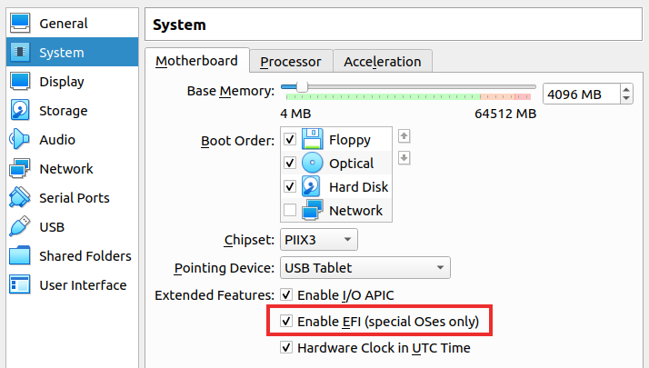

Finally I have returned to GitHub Pages.
I’d found an article “Now available: Fedora on Lenovo laptops!”. It is said that Lenovo sells ThinkPad X1 Carbon Gen 8, ThinkPad P53, and ThinkPad P1 Gen 2 laptops with Fedora pre-installed. From the one side, it’s great for the Linux community, because pre-installed Linux means that all laptop systems are tested and work properly. From the other side, Fedora provides updated packages for approximately 13 months, so it’s not the best choice for a pre-installed system.
All smartphones are similar to each other nowadays. It’s just a screen with several buttons on the edge. Most of the time it’s OK, but some tasks require typing a lot of text, so an on-screen keyboard is not the best solution. Several years ago, it was possible to buy a slider keyboard case for popular smartphones, so most of the time you use your smartphone as usual, but when you want to type a long email or execute several command over SSH you just slide a physical keyboard and use your device like a PDA. It’s a bit strange that there is no such an option nowadays. Of course, it’s possible to buy a Cosmo communicator or PinePhone Pro with a keyboard, but these devices are for hardcore enthusiasts and it can be difficult to use them every day.
It looks like Mastodon is becoming more and more popular. Maybe in the future it will become a real alternative to Twitter.
After the installation of language packages in Kubuntu 22.04, I’d found that LANGUAGE variable had
been changed. There was nothing in /etc/default/locale or ~/.pam_environment, so it looked a bit
strange. I’d realized that KDE writes locale configs into ~/.config/plasma-localerc, so I changed
settings there and reload session. Now I have the desired value of the LANGUAGE variable.
After almost three years with Ubuntu 20.04 on my desktop, I’ve finally updated to Kubuntu 22.04.
Sometimes I come across an idea that today’s computers are too complicated, and it’s difficult to understand them. People think that it was a lot easier in the 80s during the 8-Bit computer era to grasp all of what is going on inside of any single machine, because the computers were relatively simple and constrained.
I think it’s a controversial question. In the 80s, the computers were easier, but it was more difficult to find the information about them. There was no modern Internet with Google, StackOverflow and Open Source, so the computer enthusiasts spent a lot of time to understand relatively basic things. Today, there are a lot of possibilities to understand how computers work. There are books like Computer Organization and Design RISC-V Edition or university courses like MIT Operating Systems Engineering OCW course. Also, it’s possible to start your research with RISC-V microcontrollers that are a lot easier than X86 CPU.
I know a lot of developers who do not have enough time or desire to explore internal mechanisms of the frameworks and libraries they use every day and very few people even try to read the documentation and the source code to go deeper. The same was during 80s: people just learn some basic commands to start the game from ZX Spectrum cassette, but they did not understand how these commands actually worked. If someone really wants to understand the computer’s internal mechanisms, it’s possible to do. The only required thing is a desire to learn.
Never used savepoints in SQL in my projects, but this feature can be really useful for some edge cases.
GENERATED ALWAYS AS IDENTITY is a PostgreSQL construction that creates an identity column for
a table and forbids to specify a value for this field manually. E.g.
CREATE TABLE users (
id INT GENERATED ALWAYS AS IDENTITY,
name VARCHAR NOT NULL
);
INSERT INTO users(name) VALUES ('John Smith'); -- generates id value
INSERT INTO users(id, name) VALUES (42, 'Sam Smith'); -- throws an error
When I need to access my home network from remote locations, I use WireGuard. It’s fast and simple to configure. In some countries, WireGuard is blocked by authorities. OpenVPN and L2TP/IPSec are often blocked as well. The option that works almost always is Cisco AnyConnect. It’s possible to run AnyConnect compatible server with ocserv. It is slower than WireGuard, but it can solve the problem when everything else is blocked.
I’d tried DeepL. It produces accurate translations for my use cases.
KDE Plasma 5.27 has initial implementation of window tiling.
In September 2020 I’d written an article Ubuntu Snap: the Price of the Isolation. One inconvenience with Snap was the updates mechanism: it was impossible to disable auto-updates and check for new versions of software by hands. The epic with updates in Snap finally has ended:
- August 15, 2022: the PR that allows to hold refreshes indefinitely for all the system’s snaps;
- November 15, 2022: it’s possible to disable auto-updates in Snap from the edge channel (here is the post in snapcraft blog);
- January 10, 2023: snapd 2.58 released, it’s possible to disable auto-updates in Snap from the stable channel.
It was a really long discussion since 2017.
Interesting article about Open Source software for creators. The author provides the annual recap and preview of FOSS projects across the ecosystem: image editing, painting, photography, 3D, special effects, CAD, animation, video, and audio.
Continue talking about self-hosted services. There is a subreddit r/selfhosted where people discuss alternatives to popular online services that can be self-hosted without giving up privacy or locking you into a service you don’t control. In this subreddit I’d found a link to a repository awesome-sysadmin that contains a list of different Open Source admin tools.
Some people use GitHub’s Gist as a blogging platform. It seems like an interesting idea: you can publish posts using built in Markdown, follow the other GitHub members and comment on their posts. Gist has a lot of useful features for technical writing, like source code syntax highlighting, or advanced formatting.
On the other hand, Gist is another vendor lock, like Twitter or Facebook. Actually, you do not own your account and it can be terminated any time without violation of the GitHub user agreement. I also use GitHub for this blog, but I use it as a static pages hosting platform, so if I will find something better or GitHub will disable my account, I can switch to something else without losing my blog.
Maybe it’s some sort of paranoia, but it’s better to do something before it will be too late.
I use Evolution mail client because it’s the only client that works well with Exchange. I used to
install Evolution using flatpak, and it requires a password each time I start it. Today I’ve
switched from flatpak version to apt version and now Evolution starts gnome-keyring-daemon and
uses it to store passwords. So I type my keyring password only once. It’s a lot more convenient.
I use NRF24L01 chips from time to time. It’s a low-cost radio with small power consumption. That is why these chips are really useful for communications between IoT devices. NRF24L01 exposes an interface for low-level communications between two chips. Sometimes it’s enough, but the other tasks require higher-level network protocols like TCP. Recently I’ve found an inspiring post that explains how to set up a TCP/IP stack over NRF24L01. The author had developed nrfnet — an application that creates virtual interface on Raspberry PI and uses NRF24L01 as a backend for data transmission. The speed of such connection is not too high, but it allows to use software like SSH or web server.
The nrfnet project looks like a proof of concept that connects two Raspberry PI nodes. I’ve found a more mature project about NRF24L01 Networking — TMRh20. It comprises a plenty of libraries that allow to create a network of Internet enabled RF24/Arduino sensors by providing an API similar to the Arduino Ethernet library. If you are interested in this subject, you should definitely take a look at TMRh20s Project Blog.
It’s time to update my desktop at Kubuntu 22.04. To be sure that there will be no problems with devices and the software that I use every day, it’s important to a check new distro before installing it on the internal hard drive. I’d decided to install Kubuntu on an external disk.
First, I’d used one of my USB flash drives. Unfortunately, all of them were extremely slow, that is why I gave up on this idea. Also, I have one relatively old HDD that I used for backups several years ago. Usually, HDD is much faster and reliable than USB flash drives, so it looked like a suitable solution for my task. I’d bought 2.5" HDD enclosure and connected the HDD to my desktop. I tried to install Kubuntu on it, but with no luck: it had shown an I/O error on the FS creation step. An error reproduced on different distros, so it was not a distro-specific.
I thought the HDD was too old and had a lot of bad blocks, so I tried to run badblocks -svn -b 512 -c 65536 /dev/sda to check the device. Unfortunately, it took an hour to check 0.1%, so I’d
canceled the operation. I was ready to give up on the whole idea, but suddenly I tried a different
USB cable, and it worked! Kubuntu had installed with no errors.
The moral: all parts of the chain can be faulty, so check all of them one by one, and it can help you solve the problem.
Suppose you configure network settings on a remote Linux machine. The only way to access this machine is an SSH connection. To prevent access problems in case of network configuration failure, try such option:
- open
tmux; - write
sleep 600 && reboot(you should cancel this command every 5-9 minutes and start again); - perform network configuration in a separate tab.
It’s important to make only temporary changes that will be lost after a reboot:
- do not execute commands like
systemctl enable nftables, usesystemctl start nftablesinstead; - do not use
--permanentoption forfirewall-cmd.
In case of network configuration failure, your machine will be rebooted in 10 minutes. All configuration changes will be wiped out and you’ll be able to connect.
TLDR; after several years with Vim I’d found that it’s difficult to leave the editor even if I know
about :q!.

I use Vim for a long time. For the first time, Vim looked confusing and illogical comparing with mainstream IDEs like Eclipse or NetBeans. What is the purpose of different Vim modes? Why there are no menu and tabs on the interface? Why do commands for ordinary actions look like combos from Mortal Kombat? I asked myself these questions every day. Today I do not understand why I’d started this journey and why I’d not abandoned it after several months. I’m pretty sure that today I would not start something like this.
The primary task that I solved using Vim was the editing of source code and configs on the Linux servers. There was nano, but I did not like it, because it was too primitive and lacked a lot of useful features, so I was looking for something more advanced. I had no admin rights on that servers, that is why it was impossible to install something different. Even today I do not know what alternative editor I could try. Emacs? May be. But life turned out the way it turned out.
It was difficult to get used to the idea of
modes, that is why typing was a
torture. But everything changed as soon as I’d stopped using arrow keys and switched to hjkl.
Later, I’d achieved the next level of Vim skills when I’d found
macros. Assume, there are 100 uniform lines (it’s a typical
for some sort of Linux configs) and I need to change these lines somehow. Sometimes it’s easier for
me to plan a sequence of actions (like, delete a word, move the cursor to the end of the line, add a
comma and go to the next line) rather than write a regular expression. Here, recording a macro is
the best way to solve the problem.
I’d tried to switch from Vim to Visual Studio Code and Sublime
Text several times, but always returned, because it’s difficult to
work without core Vim features like marks,
folding or
splits. An example of my
everyday task: remove all symbols before :. It’s possible to do this in Vim simply type dt:,
without mouse, without deleting symbols manually one by one.
Vim is a hugely customizable platform: just compare default config, spacevim and vim.spf13. Nowadays, LSPs are available for different programming languages, so even if Vim does not have build in support for some programming language, it’s always possible to use plugins from the other editors.
If you want to try Vim, I suggest looking through the official tutorial: type vimtutor in the
terminal and follow the instructions. Recently I’d found that Frontend Masters have developed a
high-quality course VIM Fundamentals that
covers different aspects of the editor, so you can try it.
Some time ago I’d found a vim-pedal project on GitHub. It’s a
device, recognized by as a USB keyboard. The device generates i symbol on press and ESC on
release. The user moves the cursor around the document in normal mode and when it’s required to
inserts something — presses the pedal, insert some string and then releases the pedal. It looked
interesting.
I’d decided to implement a prototype of such a device using STM32 microcontroller and digital piano pedal. I’d bought Cherub WTB-004. Some user reviews said that the pedal had a loud click, and that is why it’s not the best choice for piano players, but for me the pedal sounds like a mechanical keyboard with blue switches and I like it. I’d taken my Nucleo-64 evaluation kit out of the cabinet and had started prototyping.
I can’t say that I’d developed nothing for microcontrollers, but most of the time I used AVR chips. I used Vim to write code, avr-gcc to build a binary and avrdude to upload the program to the on-chip memory. As I found, in the STM32 world the software development looks a bit more complicated, especially for newbie. Almost any tutorial from the Internet relies on the IDE and some standard libraries. I’m sure that it’s possible to use only Vim and the terminal to build STM32 software, but I have limited time, so I went a mainstream way.
Most of the tutorials rely on the official IDE by ST Electronics — STM32CubeIDE. I’d found a Linux version on the ST Electronics site. One of the useful features of this IDE is a code generation: the developer selects a target microcontroller, enables and configures hardware interfaces and timers using GUI, then IDE generates all required boilerplate code and then the developer can focus on the business logic.
The first program I wrote was the classic “Hello, World” with blinking led. I found all the required information in the article from Hackster.
The next step was controlling the button state. It’s possible to read MCU pin state synchronously in
the main loop, using HAL_GPIO_ReadPin function:
GPIO_PINState btn_state;
// Main loop
while (1)
{
btn_state = HAL_GPIO_ReadPin(GPIOC, GPIO_PIN_13);
if (btn_state == GPIO_PIN_SET)
{
// High level on PC13
}
else
{
// Low level on PC13
}
}
Sometimes such an approach is inconvenient. Assume an application should perform two actions: react on the button state change and send a block of data through UART. The transmission function is implemented in a synchronous manner, so if it starts sending data, the MCU can’t do anything else until the transmission is complete. If transmission takes a lot of time, the MCU can’t react on the button state change on time.
There is an approach that allows to perform several operations simultaneously. It’s called interrupts. When some external events, like button state change, occur, the MCU stops its main loop and executes an interrupt handler function. After that, MCU continues to execute the main loop. An example of button state change processing with interrupts is explained in the article from DeepBlue.
One problem I need to solve when working with mechanical buttons is a contact bounce. The button’s switches comprise spring materials. When any switch actuates, the contact touches one another. Under the force of actuation, continuity is expected at a single steady moment. But the momentum produced because of the mass of the moving contact and the inherent elasticity in this mechanism makes the contact bounce several times before achieving a steady contact and coming to a full rest. This effect is unnoticeable for devices like LED flashlight but it causes unwanted consequences when working with MCU.
One of the software ways to neutralize the contact bounce is adding a delay after first button state change detection. The MCU detects button state change, waits for some time (e.g. 20 ms) and after that checks the button state again.
In my code, I’d implemented contact bounce protection in such a way:
GPIO_PinState old_btn_state = 0;
GPIO_PinState new_btn_state = 0;
int main()
{
// ...
// Main loop
while (1)
{
if (old_btn_state != new_btn_state) {
old_btn_state = new_btn_state;
// Button state had changed
// ...
}
}
}
// External interrupt handler
void HAL_GPIO_EXTI_Callback(uint16_t GPIO_Pin)
{
// The same interrupt handler is called for different buttons,
// so check the target pin before further actions
if(GPIO_Pin == GPIO_PIN_13)
{
// Disable further interrupts to solve contact bounce issues
HAL_NVIC_DisableIRQ(EXTI15_10_IRQn);
// Start timer
HAL_TIM_Base_Start_IT(&htim2);
}
}
// Timer interrupt handler
void HAL_TIM_PeriodElapsedCallback(TIM_HandleTypeDef *htim)
{
// The same interrupt handler is called for different timers,
// so check the target timer before further actions
if(htim->Instance == TIM2)
{
// Stop the timer
HAL_TIM_Base_Stop_IT(&htim2);
// Enable external interrupts
__HAL_GPIO_EXTI_CLEAR_IT(GPIO_PIN_13);
NVIC_ClearPendingIRQ(EXTI15_10_IRQn);
HAL_NVIC_EnableIRQ(EXTI15_10_IRQn);
// Save new button state to process it in the main loop
new_btn_state = HAL_GPIO_ReadPin(GPIOC, GPIO_PIN_13);
}
}
Let’s say a few words about USB. Today, it’s one of the most popular protocols. It is used in different devices like keyboards, mice, cameras, flash drives and a lot more. The USB protocol specification can be found on an official site. It’s a huge document that is difficult to read, that is why I suggest reading USB in a NutShell first.
STM32F446 has a hardware USB support. It allows to work as a USB device using interrupts. Read an article from instructables circuits to find out how to configure STM MCU to work with USB.
I used code generation to add USB support into my project and found an annoying issue. By default, IDE configures the MCU to work as a USB mouse. I need to change several files to switch from a mouse to a keyboard. When I change some MCU settings in the GUI, it starts a new code generation cycle and reverts all previous changes. I use git and commit my changes from time to time. That is why this issue does not affect me a lot, but it’s better to know about it in advance.
After all modifications, my main function looks like this:
extern USBD_HandleTypeDef hUsbDeviceFS;
typedef struct
{
uint8_t MODIFIER;
uint8_t RESERVED;
uint8_t KEYCODE1;
uint8_t KEYCODE2;
uint8_t KEYCODE3;
uint8_t KEYCODE4;
uint8_t KEYCODE5;
uint8_t KEYCODE6;
} keyboardHID;
keyboardHID keyboardhid = {0, 0, 0, 0, 0, 0, 0, 0};
GPIO_PinState old_btn_state = 0;
GPIO_PinState new_btn_state = 0;
int main()
{
/* Reset of all peripherals, Initializes the Flash interface and the Systick. */
HAL_Init();
/* Configure the system clock */
SystemClock_Config();
/* Initialize all configured peripherals */
MX_GPIO_Init();
MX_USART2_UART_Init();
MX_USB_DEVICE_Init();
MX_TIM2_Init();
// Read initial button state
new_btn_state = HAL_GPIO_ReadPin(GPIOC, GPIO_PIN_13);
old_btn_state = new_btn_state;
// Main loop
while (1)
{
if (old_btn_state != new_btn_state) {
old_btn_state = new_btn_state;
if (new_btn_state)
{
keyboardhid.KEYCODE1 = 0x29; // Button released, generate ESC
}
else
{
keyboardhid.KEYCODE1 = 0x0C; // Button pressed, generate i
}
// Send virtual keyboard key pressed
USBD_HID_SendReport(&hUsbDeviceFS, (uint8_t *)&keyboardhid, sizeof(keyboardhid));
HAL_Delay(50);
// Send virtual keyboard key released
keyboardhid.KEYCODE1 = 0x00;
USBD_HID_SendReport(&hUsbDeviceFS, (uint8_t *)&keyboardhid, sizeof(keyboardhid));
}
}
}
I was working with Vim pedal for several days. It was an interesting experiment. Suddenly, I’d
realized, that I often switches from normal mode to insert mode not only with i key but also with
different commands like cw, cc, A and I. I can’t use Vim pedal for such cases for now, so
some sort of further improvements are required.
In conclusion, I want to say that building the Vim keyboard was an outstanding adventure. I learned a lot of useful info about USB protocol, mechanical switches and improved STM32 programming skills.
ired.team — a site dedicated to pentesting, security tools and techniques. Recently I’d read an article about Windows API Hooking from this resource. It describes a technique that can be used to intercept API calls. Malware software often uses such technique to different malware software to inject malicious code into the user’s process.
Nginx is a standard de facto in my projects. On the weekend, I’d read The Complete NGINX
Cookbook. I’d found some useful
tips about $request_id variable or rate_limit directive. I think the book is worth reading.
Most of the time, I use nginx as an HTTP load balancer, but it can also balance raw TCP and UDP
streams with
stream block.
hping is a really flexible network diagnostic tool. It supports TCP, UDP, ICMP and RAW-IP protocols, has a traceroute mode, the ability to send files between a covered channel, and many other features. It helps to investigate network failures and fix its, so I think, it’s a must-have instrument for every developer and admin.
Today I’d accidentally pressed some buttons and Firefox changed text alignment from left to right.
It was a bit confusing. If someone experienced the same issue and wants to return everything back,
it can be done with Ctrl-Shift-X.
The required things for offline coding:
Do you know that it’s possible to download the whole Wikipedia or Stack Overflow with
kiwix? Just go to
library.kiwix.org, select required
resource and download the dump. It can take several hours, even on a fast connection. Then use the
reader to explore the resource offline. I prefer to install the
reader from Flatpak: flatpak install flathub org.kiwix.desktop.
Kiwix is barely useful for fast Internet connection, but for some corner cases it can be extremely important.
Today I’ve discovered Command Line Heroes — the podcast from RedHat. It tells stories about different tech fields like security, programming languages or open source. It’s more like an audio book than a radio show. I think it’s worth listening.
Found chat.stackoverflow.com. Stackoverflow had reinvented IRC.
When you need to transfer Git repo, e.g. send it by email, it’s possible to use git
bundle. Create .bundle file with git bundle create my-repo.bundle master, send it, and then extract data with git checkout my-repo.bundle my-repo.
Also, there is a Reddit thread about development environments for STM32 on Linux. So if you think STM32CubeIDE is not your choice, you’d better look at this discussion.
Found a nice wiki page about STM32 Development tools. There are some interesting alternatives to the STM32CubeIDE. It’s worth reading.
Talking about Linux Kernel on Ubuntu 20.04 Server: found that it’s possible to install 5.15 LTS
manually using sudo apt install --install-recommends linux-generic-hwe-20.04. Looks reasonable:
for server installations it may be dangerous to perform such updates automatically.
Switched from Adobe Acrobat Reader to Sumatra PDF for viewing PDFs on my Windows machine. It’s a lot smaller, faster and the source code is available on GitHub.
I always thought that PNG is a file format for static images, but today I was searching for a new
emoji for Slack and found an animated image with .png extension. Surprisingly, there is an
Animated Portable Network graphics (APNG) file format, and
it’s supported by the most of the modern web browsers.
Actually, the previous message is correct for desktop version only: Ubuntu Server 20.04 uses Linux kernel 5.4.0.
Found that Ubuntu 20.04.4 and Ubuntu 22.04.1 have the same kernel 5.15.0. I thought that 22.04 should have a later version, like 5.19.3.
After updating to Kubuntu 22.04 my OpenVPN stop working with an error like:
OpenSSL: error:0A00018E:SSL routines::ca md too weak
Cannot load inline certificate file
Exiting due to fatal error
The correct way to solve this issue is certificate regeneration, but I do not control the server. So
the temporary solution is to add the line tls-cipher "DEFAULT:@SECLEVEL=0" into ovpn config
file. It allows OpenVPN to use weak tls cipher, so the connection starts as usual.
Found an interesting article about
curl’s options for connecting to the different host. Most of the time I’d changed Host HTTP
header, and it was enough for my cases, but today I’ve realized that this solution is not acceptable
when for HTTPS resources. Here, I need to specify the host name during SSL connection negotiation,
so I can’t use HTTP headers. There is an SNI
field that allows to tell the server which
host I want to access. Curl uses URL to prepare SNI field value: for command curl https://example.com/foo SNI value is example.com and when I set Host header, it does not affect
SNI at all. To change SNI the –resolve option can be
used:
curl --resolve example.com:443:127.0.0.1 https://example.com/
The command above populates curl’s DNS cache with a custom entry for the host name example.com and
port 443 with the address 127.0.0.1. That is why curl will use specified IP address to start TCP
connection and then use example.com for SNI field.
And one more useful Vim command: to make my markdown files easy to read, I limit the line width with 100 chars and highlight longer lines:
set tw=100
2mat ErrorMsg '\%101v.'
The editor split lines automatically as I type, but if I add some text in the middle of the line, I
have to select a paragraph with vap command and reformat it with gq.
I write articles and docs using Vim. It’s convenient when the editor can check spelling on the fly,
so I can fix mistakes as soon as possible. Sometimes I use different languages in one file and I
want the editor to find spelling issues for all languages in it. It’s possible to set multiple
languages for spell check in Vim with a command like :set spelllang=en_us,de_de, so the editor
will use several dictionaries. I prefer to underline incorrect works with :hi SpellBad cterm=underline.
I work on several projects. Each of them require a VPN connection. Sometimes, I work from remote locations and I need to access my home network. It’s one more VPN connection. It’s convenient to have an ability to access different private networks at the same time. Let’s discuss the issues of multi-VPN setups and possible.
TL;DR:
- Use NetworkManager to manage VPN connections.
- Disable systemd-resolved.
- Use dnsmasq to process DNS requests.
The most common commercial VPN I’d encountered is Cisco AnyConnect. For my personal projects, I use WireGuard. When I need to access my home network, I have an OpenVPN server on my router. It’s an interesting task to make all these connections work at the same time without conflicts.
Each VPN connection has routes and DNS configurations. AnyConnect and OpenVPN push routes and DNS to the client during the connection startup and WireGuard has a static setup in the config file. Some VPN setups provide a lot of routes or even try to route all client’s traffic though the VPN connection. It’s useful when working from untrusted location like cafe, hotel or airport and there are a lot of free and commercial VPN solutions that work this way. But when there are several active VPN connections, this behavior can cause different issues.
Most corporate networks have private DNS servers with addresses of internal resources like an issue tracker, a source code repository or a monitoring system. VPN connection changes the system DNS settings, so it’s possible to resolve private domains and to access internal resources. Most of the time, the operating system works with only one DNS server or several servers that work identically. This scheme does not work for a multi-VPN setup, because it’s required to process different domains in different ways. That is why an addition configuration is required.
The main idea of multi-VPN setup is to restrict routes for each connection and to configure different DNS servers for different domains.
There is an official Cisco AnyConnect utility for Linux, but I prefer to use OpenConnect. It allows to change routes that the client receives from the server and seamlessly integrates with NetworkManager, so I can manage all my network connections in one place.
OpenConnect command looks like sudo openconnect vpn.example.com. It asks username and password and
then creates a connection. To stop this connection, Ctrl-C can be used. OpenConnect executes
vpnc-script when the connection starts to set the routing and name service up. On Kubuntu 22.04,
the location of this script is /usr/share/vpnc-scripts/vpnc-script. The default script accepts all
routes and DNS settings from the server. The script can be redefined with --script option. From
the Stack Exchange post
I’d found the way to create a wrapper for the default script that restricts the routes for the
connection, but there is an easier way to solve this problem —
vpn-slice. Assume I want to route only 10.0.8.0/24 network
through the VPN connection. It can be achieved this way:
sudo openconnect vpn.example.com --script 'vpn-slice 10.0.8.0/24'
Any additional routes or DNS config will be ignored.
For the WireGuard the configuration looks like:
[Interface]
PrivateKey = client-private-key
Address = 10.0.8.2/32 # IP address of the client in the VPN network
DNS = 10.0.8.5
[Peer]
PublicKey = remote-public-key
AllowedIPs = 10.0.8.0/24
Endpoint = 1.2.3.4:12345 # Public address of VPN server
It’s easy to restrict routes by editing the value of the AllowedIPs option. Just remove
unnecessary networks. DNS option makes WireGuard to change the system DNS server on the connection
startup. For multi-VPN setup, It’s better to remove this option and configure domain name resolution
manually in a different way.
For the OpenVPN connection, use route-nopull option to restrict routes. It says that the client
should ignore routes from the server, so it’s possible to define all required routes in the client’s
config file:
route 10.0.8.0 255.255.255.0
route-nopull
I prefer to manage all my VPN connections through the NetworkManager GUI. First, I install the packages:
sudo apt install network-manager-openconnect network-manager-openvpn
OpenConnect connection has a few settings, so it’s easy to create and configure new connection
through the network settings GUI of Gnome or KDE. In the IPv4 section choose
Automatic (Only addresses) option, press Routes button, configure necessary networks and select
Ignore automatically obtained routes checkbox.
It’s difficult to configure OpenVPN through the GUI because there are a lot of different settings.
That is why I prefer to import the connection config to the NetworkManager with
nmcli connection import type openvpn file home.ovpn where home.ovpn is a connection config file
name.
For the WireGuard I import a connection with a command
nmcli connection import type wireguard file wg0.conf where wg0.conf is a name of a config file.
After the import, connection activates automatically. To turn the WireGuard VPN off, use the command
nmcli connection down wg0. It is also possible to control WireGuard connection through KDE GUI.
There is no support for WireGuard in a Gnome NetworkManager GUI (here is a
ticket in the Gnome’s GitLab)
but it is always possible to use nm-connection-editor as a workaround.
To solve the DNS problem, I execute such steps:
- Disable
systemd-resolved. - Install
dnsmasq. - Configure different forwarders for different domains.
- Make
dnsmasqthe system resolver.
systemd-resolved
is a part of systemd that provides network name resolution,
LLMNR and MulticastDNS
resolver and responder. It can be used as a network service and through a
D-Bus API. The most applications use only basic
feature of DNS resolution so it’s safe to disable systemd-resolved. I tried to set different DNS
servers for different domains with systemd-resolved, but it’s a too hard task. From the
discussion on GitHub, I’d found
that it’s possible, but the configuration is obscure and it makes more troubles than solves. So I’d
disabled systemd-resolved and switched to the dnsmasq. To disable systemd-resolved in the config
/etc/NetworkManager/NetworkManager.conf add dns=none to the [main] section and execute the
following commands:
systemctl stop systemd-resolved
systemctl disable systemd-resolved
rm /etc/resolv.conf
systemctl restart NetworkManager
dnsmasq is a DNS forwarder that can be used as a local DNS
server. It does not host DNS zones itself, but only forwards requests to the configured servers.
Install dnsmasq with apt install dnsmasq and add such lines to the /etc/dnsmasq.conf:
# Do not use or poll /etc/resolv.conf
no-resolv
no-poll
# Expose dns server for the local machine only
interface=lo
# Disable DNS cache, so there will be less issues if DNS server
# of the VPN connection returns different domains for external
# and internal clients.
cache-size=0
no-negcache
# Set one DNS forwarder for first domain
server=/example1.com/1.2.3.4
# Set another DNS forwarder for second domain
server=/example2.com/5.6.7.8
# Set default DNS forwarder
server=8.8.8.8
Start the server:
systemctl start dnsmasq
systemctl enable dnsmasq
Set dnsmasq as a system resolver in /etc/resolv.conf:
nameserver 127.0.0.1
Such setup allows me to work simultaneously with several projects in different private networks, resolve domain names correctly and send only required traffic to the particular VPN connection.
Update for the previous message: A moment ago I’ve realized that Ubuntu apt repo contains grip
4.2.0. It’s an old version that generates strange pages. The best decision was to switch from an
old apt version to the grip 4.6.1 from PyPi. It can be installed with such a command:
pip3 install --user grip. Now the page looks great with no additional options in the config file.
I use grip to preview markdown documents locally. To make the
generated page looks like README on GitHub add such line into ~/.grip/settings.py:
STYLE_URLS = ['https://cdnjs.cloudflare.com/ajax/libs/github-markdown-css/5.1.0/github-markdown.min.css']
It’s a CDN URL for github-markdown-css. This library is a minimal amount of CSS to replicate the GitHub Markdown style.
Found an outstanding notes.vim plugin for Vim. It allows to write some notes with basic formatting and navigation. The syntax highlighting of the source code can be useful for notes of software developers.
Useful tip: it’s possible to execute some code on the Vim’s startup with -c argument. I use it to
prepare Vim for blog post editing like this: vim -c 'call ConfigDoc()' post.md. I don’t want to
add this function call into .vimrc for all .md files, because there are a lot of different
markdown files that do not require this configuration. So command line argument does the trick.
I tried to download a file with curl on Oracle Linux 8 and got an error:
routines:ssl_choose_client_version:unsupported protocol. It’s an old host and I have no access to
upgrade the software. So I had to relax my encryption settings with
update-crypto-policies --set LEGACY. It’s not the best way to solve this issue, but if you need to
download a file and you don’t have any other options, it is worth doing.
The easiest way to find Ubuntu installation date is checking the installer’s directory:
ls -lt /var/log/installer.
Sometimes I need to test new software or prepare isolated stands. I use VirtualBox for these tasks. I want to access VMs from the host PC and the easiest way to achieve this is by using bridged network adapters. Unfortunately, VM with a bridged network is exposed not only to the host but also to all machines in the network. VM relies on the router DHCP. It’s can be unacceptable for some locations.
Today I’ve found how to access a NAT guest from host, so I can forward VM’s port to the host and do not expose the VM for the entire network.
Found an outstanding video about VGA signal. Ben Eater explains what VGA display actually does when it receives an input, how it processes this input to display pixels on the screen and how to make a circuit using primitive ICs that can generate such signal for the display.
I have several devices that I use every day: PC, laptop and phone. I want to share some notes between them, but I don’t want to use cloud solutions like Google Docs. So today I’ve installed Wiki.js instance on my Ubuntu server. It works fast, uses a few resources on my workloads and has a lot of useful docs.
This article about sudo rules troubleshooting helped me a lot with FreeIPA configuration. It was difficult to understand what was going on before I turn debug logs of the SSSD on.
Vim 9.0 had been released several days ago. I started using Vim when the latest version was 6.4. The modes idea and navigation with j, k, k and l keys were unfamiliar to me and I’d spent a lot of time to get used to it. Now it’s something natural, so sometimes it’s difficult to use mainstream editors without Vim features. The most annoying thing with Vim 6.4 was the lack of editor tabs. I knew that there were buffers, but I did not like it. That is why I was extremely happy when Vim 7, with tabs support, was released. I rarely use this feature nowadays. What a twist of fate.
One task that I perform these days is the configuration of the FreeIPA domain. Sometimes it’s not trivial, so I need to debug some sort of quirky errors from time to time. Today I’d found Thomas C. Foulds’s blog that contains a lot of useful information about FreeIPA debugging. It’s definitely worth reading.
It’s possible to connect to a remote host over SSH using a public key. It’s a well-known feature
which I use every day. SSH protocol is also used for the git clone command. I was curious about
how Gitea implements the support of the SSH protocol. The first idea was about the custom SSH
server. I’d inspected my local Gitea installation and found that there was no custom SSH server
running, just the default sshd. Surprisingly, when I performed the command ssh git@gitea I got
the message:
Hi there, <username>! You’ve successfully authenticated with the key named <key name>, but Gitea does not provide shell access. If this is unexpected, please log in with password and setup Gitea under another user.
I’d looked at the source code of the Gitea and found
serv.go.
This module allows to perform git clone over SSH, but who calls it? I looked at the
.ssh/authorized_keys file in the Gitea home directory and get such a line:
command="/usr/local/bin/gitea --config=/etc/gitea/app.ini serv key-1",... ssh-rsa ...
man authorized_keys explains that command option specifies the command is executed instead of
the default shell. So when I write git clone git starts SSH connection and OpenSSH server checks
my key and if it’s OK starts Gitea serv module.
This OpenSSH feature allows to restrict certain public keys to perform just a specific operation. E.g. I can create a key and specify the command that calculates some server statistics. So if this key is compromised, the intruder can get only server statistics but can’t execute arbitrary code.
There are a lot more options for the authorized_keys file. I think the man page is worth reading.
I got a lot of new info about the utility I use for a long time.
Ubuntu 22.04 distributes Firefox as a snap package. It starts slower than Firefox installed as a deb-package and it’s difficult to control updates of the browser. It’s possible to install Firefox as a deb package from Mozilla Team PPA. There is a useful guide from omgubuntu.co.uk about how to configure the system to use this PPA.
Most of RPM-based Linux distributions use frontends like yum or dnf. Most of deb-based Linux distributions use apt-get, aptitude or apt. Surprisingly, there is an APT-RPM package manager — a version of apt-get modified to work with RPM.
Annoying bug: it’s
impossible to add a route without a gateway in NetworkManager GUI in Ubuntu 20.04. Fortunately,
there is a workaround: use 0.0.0.0 as a gateway.
Systemd allows to pass a single argument to a service. This feature is called Service Templates. It can be used for such applications as OpenVPN (the argument is a connection config name) or PostgreSQL (the argument is a cluster version).
Kubuntu 22.04 has libssl 3.0.2, that is not compatible with libssl from old releases, so Viber messenger is not working. It shows an error message “No Connection” even the other network apps like Firefox work well. I think this bug will be fixed in future Viber versions. For now, it’s possible to perform a hotfix:
Install libssl 1.2.1 from Ubuntu 21.10:
wget http://security.ubuntu.com/ubuntu/pool/main/o/openssl/libssl1.1_1.1.1l-1ubuntu1.2_amd64.deb
sudo dpkg -i libssl1.1_1.1.1l-1ubuntu1.2_amd64.deb
Preload libssl 1.2.1 into Viber. Replace line that contains Exec instruction in
/usr/share/applications/viber.desktop with this:
Exec=LD_PRELOAD=/usr/lib/x86_64-linux-gnu/libssl.so /opt/viber/Viber %u
I’ve just updated from Kubuntu 21.04 to Kubuntu 22.04 on my laptop. From the release notes I found no breaking changes, but only minor updates for different programs. Everything works as expected.
It’s convenient to monitor network activity in the terminal. There are several tools for this task: bmon, slurm or tcptrack. I prefer to use slurm.
Some people prefer to use self-hosting services instead of consuming from SaaSS providers. It’s useful to look through the comprehensive list of different software which can be hosted on your own server.
What’s The Deal With Snap Packages? Snap package system offers a controversial approach for managing software. It’s definitely not a silver bullet. Two years ago I wrote an article with such a point of view and today I’ve found an article that shares my point of view in some way. It’s definitely worth reading. I think the user should control the system and package manager should allow to do it.
KernelNewbies is an extremely useful resource for those who want to explore kernel changes but yet not ready for reading lkml.
From time to time I have to check my disk usage. It’s possible to use df and du for rough
estimate, but it’s more convenient to have some UI for further analysis. I prefer to use ncdu.
Some other tools are described in the
article.
OpenSnitch is a GNU/Linux port of the Little Snitch application firewall. Tried it today on Kubuntu 21.04. It works as expected, so if you got used to Little Snitch on MacOS and switched to Linux you should definitely give it a chance.
Looked at Gitea as a self-hosted alternative for GitHub. It looks nice: a lot of useful features like global code search and template repositories. There is a comprehensive comparison of Gitea to other Git hosting solutions. It can help decide if Gitea is suited for your needs or not.
The only thing that surprised me a bit: the information about package registry is already in the official docs, but PR with this feature was merged only several days ago, so it will be available only in v1.17.0. The most recent release for now is v1.16.5.
Surprisingly found that Linux has multiple routing tables and set of rules that tell the kernel how to choose the particular table for each packet. There are an article and a reddit discussion explaining this subject.
Today I’ve created a test stand that consisted of several Debian VMs to learn some basic network management and firewall and VPN configuration. It looks astonishing. My primary job is writing software, that is why I configure Linux networks rarely, and it’s a bit complicated for me. Maybe a bit later I’ll write an article about all this stuff.
Really awesome video about hacking the Nintendo Game & Watch. It uses STM32 locked processor and AES-CTR encrypted flash, but it had not helped, and the console was hacked one day before release.
I’d used CentOS as a production environment for working projects. Some time ago Red Hat announced its plans to replace stable CentOS 8 with rolling release CentOS Stream. So, CentOS had been replaced with Oracle Linux. Today I’ve found that Oracle has its own Linux kernel build that is called Unbreakable Enterprise Kernel. They add some features like Ksplice that look interesting for high-load enterprise platforms.
Unexpectedly discovered a lot of paid proprietary apps in snapcraft. I think it’s great because Linux users and developers have more choices.
Do you feel like you getting old and new technologies do not excite you anymore? Do you think that you have seen most things before? I’ve found an interesting discussion on Hacker News about this topic. Different people share their feelings and ways of getting through this period of life.
Falling down the rabbit hole of HiDPI screens and fractional scaling on Linux desktops I came across an interesting discussion on Reddit. It contains a lot of useful links that help to form an opinion on the subject.
I found that in the KDE X11 session fractional scaling is implemented on Qt Framework level, so each app scales its output itself. Gnome uses a different technique. It implies rendering everything at an integer factor and then downscaling using a raster operation. It’s a more universal approach and does not depend on the GUI framework, but it can lead to some sort of degradation for the font rendering. It can be almost invisible for Apple-like retina displays with a 1.75 scale factor but it’s notable on the average 13" - 14" laptop 1080p screen.
I think the best way to avoid HiDPI rendering issues is using such displays that allow setting integer scale factors like x2 on a 14" screen with 2880х1800 resolution. All other techniques will be always the compromise between GUI framework requirements, multi-screen setup support, performance, and final picture quality.
The majority of GUI apps on Linux are written using some toolkit like GTK or Qt. Such libs provide high-level abstractions like buttons or labels but the real rendering is executed on the backend like X11 or Wayland. I’d never thought about it. Today I’ve found that the X11 backend uses Xlib. To understand what level of abstraction GUI libraries provide, you can take a look at this small tutorial. After writing a Hello World with Xlib it becomes clear for me why developers introduce more abstraction layers.
I’m learning the STM32 platform. The code generation in STM32CubeIDE makes it easier to configure different MCU subsystems and start writing “hello world” apps. However, it can be difficult to understand how all this magic works. Fortunately, there is a comprehensive explanation in the STM32CubeMX for STM32 configuration and initialization C code generation user manual in section 6.1.
To make L2TP/IPsec VPN client work under Kubuntu install network-manager-l2tp package.
Today I’ve found that youtube-dl downloads video too slow. Switching to yt-dlp helped: 10MiB/s instead of 50KiB/s.
Every computer program uses the main memory (RAM) to store data. RAM is considered to be fast storage compared even to the fastest NVMe SSD or 100Gbit network. It seems that the RAM speed is high enough and that is why no optimizations are required: just read or write any memory cell when the program needs it.
From the famous article What Every Programmer Should Know About Memory, I’d found that memory access is more tricky than I used to think about.
Modern CPUs have a small amount of blazing-fast internal memory — the registers. There is no delay when accessing data from the registers, the functional units can operate on this data directly. Each CPU core has its own registers, so the access time does not depend on the other cores’ load.
If there is no requested data in the CPU registers it should be loaded from the RAM to execute operations on it. Accessing the RAM is 10 times slower than accessing the registers, so the CPU has to request the data and wait a significant amount of time before it will be loaded into the registers. Also, there is a shared bus between the RAM and CPUs, that is why if one core actively access the RAM it can influence the accesses time for the other cores.
To reduce the average cost to access data from the main memory a mechanism called CPU cache was introduced. It’s a small amount of fast on-chip memory, which stores copies of the data from the RAM. An access time to the cache is much smaller than to the RAM. Most CPUs have a hierarchy of multiple cache levels (L1, L2, L3). Each next level of cache is bigger but slower.
Data is transferred from the RAM and stored in the cache in blocks of fixed size, called cache lines. When the CPU needs to read a location in memory, it first checks for a corresponding entry in the cache. If the requested data is not found in the cache, a cache miss is occurred. A cache miss is quite expensive because it requires not only to load new data from the memory into the cache but also to evict one of the existing entries. That is why one of the crucial software developer’s tasks is organizing memory access of the program in such a way that minimizes the number of cache misses.
Consider the practical task. Matrix multiplication is one of the most important matrix operations. It is used widely in such areas as machine learning or 3D graphics. For the huge matrices, the computations can take a lot of time, so the optimization of this operation can increase the speed of the whole program significantly.
The description of an algorithm can be easily found on Wikipedia.
The naive Plain C implementation looks like this:
void matrix_multiply(size_t sz, double **mul1, double **mul2, double **res) {
size_t i, j, k;
for (i = 0; i < sz; i++) {
for (j = 0; j < sz; j++) {
for (k = 0; k < sz; k++) {
res[i][j] += mul1[i][k] * mul2[k][j];
}
}
}
}
The function receives two square matrices mul1 and mul2 of size sz x sz and calculates their
multiplication into res. It’s expected, that res is initialized by zeros.
Assume the matrix of size 1000x1000. In this case, CPU cache can’t hold an entire matrix. In the
inner loop, the elements of mul1 are accessed sequentially, so it uses CPU cache effectively. For
the mul2 argument, the elements are accessed more-or-less randomly. For each element of the result
matrix, 1000 random elements should be retrieved from the RAM.
I got such measurements on my PC:
| matrix size | execution time in cycles |
|---|---|
| 100x100 | 733 |
| 300x300 | 21485 |
| 500x500 | 101610 |
| 1000x1000 | 843546 |
| 2000x2000 | 25787985 |
| 3000x3000 | 107763896 |
First optimization is a mul2 transposition:
void matrix_multiply_t(size_t sz, double **mul1, double **mul2, double **res) {
size_t i, j, k;
double tmp;
for (i = 0; i < sz; i++) {
for (j = i; j < sz; j++) {
tmp = mul2[i][j];
mul2[i][j] = mul2[j][i];
mul2[j][i] = tmp;
}
}
for (i = 0; i < sz; i++) {
for (j = 0; j < sz; j++) {
for (k = 0; k < sz; k++) {
res[i][j] += mul1[i][k] * mul2[j][k];
}
}
}
}
After mul2 transposition, it’s possible to access both arguments sequentially, so CPU cache is
used effectively. The function needs some time for the transposition operation that is why the
results can be similar to naive implementation for small input matrices.
The function modifies mul2 argument, that is why it can’t be used further. It’s possible to make a
copy of mul2, but in this case, the function requires additional memory, so the software developer
should decide what is the best option for the particular task.
The execution results:
| matrix size | execution time (cycles) | relative execution time |
|---|---|---|
| 100x100 | 719 | 98.09% |
| 300x300 | 20885 | 97.21% |
| 500x500 | 96832 | 95.30% |
| 1000x1000 | 788834 | 93.51% |
| 2000x2000 | 7268999 | 28.19% |
| 3000x3000 | 24179636 | 22.44% |
The second optimization is accessing data in such a way that utilizes CPU cache as much as possible without matrix transposition:
#define SM (CLS / sizeof(double))
void matrix_multiply_fast(size_t sz, double **mul1, double **mul2, double **res) {
size_t i, i2, j, j2, k, k2;
for (i = 0; i < sz; i += SM) {
for (j = 0; j < sz; j += SM) {
for (k = 0; k < sz; k += SM) {
size_t i2_max = MIN(SM, sz - i);
for (i2 = 0; i2 < i2_max; i2++) {
double *rres = res[i + i2] + j;
double *rmul1 = mul1[i + i2] + k;
size_t k2_max = MIN(SM, sz - k);
for (k2 = 0; k2 < k2_max; k2++) {
double *rmul2 = mul2[k + k2] + j;
size_t j2_max = MIN(SM, sz - j);
for (j2 = 0; j2 < j2_max; j2++) {
res[i + i2][j + j2] += mul1[i + i2][k + k2] * mul2[j + j2][k + k2];
}
}
}
}
}
}
}
The algorithm makes the same calculations as a naive implementation but in a different order. There
are six nested loops. The outer loops iterate with intervals of SM (the cache line size divided by
sizeof(double)). This divides the multiplication into several smaller problems which can be
handled with more cache locality. The inner loops iterate over the missing indexes of the outer
loops. k2 and j2 loops are in a different order because, in the actual computation, only one
expression depends on k2 but two depend on j2.
CLS macro is defined by the command getconf LEVEL1_DCACHE_LINESIZE during the compilation. This
command returns L1 cache line size, so it makes it possible for inner loops to utilize CPU cache
effectively.
The execution results:
| matrix size | execution time (cycles) | relative execution time |
|---|---|---|
| 100x100 | 606 | 82.67% |
| 300x300 | 15503 | 72.16% |
| 500x500 | 72558 | 71.41% |
| 1000x1000 | 600223 | 71.15% |
| 2000x2000 | 5203588 | 20.18% |
| 3000x3000 | 17501126 | 16.24% |
The most optimized version can be found in the article (p.50):
#define SM (CLS / sizeof(double))
void matrix_multiply_seq(size_t sz, double **mul1, double **mul2, double **res) {
size_t i, i2, j, j2, k, k2;
double *rres, *rmul1, *rmul2;
for (i = 0; i < sz; i += SM) {
for (j = 0; j < sz; j += SM) {
for (k = 0; k < sz; k += SM) {
size_t i2_max = MIN(SM, sz - i);
for (i2 = 0, rres = &res[i][j], rmul1 = &mul1[i][k]; i2 < i2_max; ++i2, rres += sz, rmul1 += sz) {
size_t k2_max = MIN(SM, sz - k);
for (k2 = 0, rmul2 = &mul2[k][j]; k2 < k2_max; ++k2, rmul2 += sz) {
size_t j2_max = MIN(SM, sz - j);
for (j2 = 0; j2 < j2_max; ++j2) {
rres[j2] += rmul1[k2] * rmul2[j2];
}
}
}
}
}
}
}
Compared to matrix_multiply_fast this function uses temp variables to hold intermediate values and
also uses += sz instruction to iterate over the matrices. As a result, the compilation produces
more compact machine code, so less instruction should be executed for each iteration.
This function requires data to be stored sequentially in the memory, so
mul1[i + 1][0] == (mul1[i] + sz)[0].
The execution results:
| matrix size | execution time (cycles) | relative execution time |
|---|---|---|
| 100x100 | 459 | 62.62% |
| 300x300 | 11773 | 54.80% |
| 500x500 | 56441 | 55.55% |
| 1000x1000 | 480246 | 56.93% |
| 2000x2000 | 4164429 | 16.15% |
| 3000x3000 | 14001852 | 12.99% |
From the results, it can be found that execution time does not differ a lot for small matrices, but as matrices become bigger the difference grows significantly, that is why the optimizations are worth implementing.

I run all examples on the machine with Intel Core i7-10700K processor and 3000 MHz DDR4 memory on Ubuntu 20.04 with gcc 9.3.0.
I’d uploaded the code I’d used into GitHub repo, so anyone can run it and measure an execution time on the different hardware.
Concluding, writing the code considering cache locality can increase the performance dramatically, but sometimes it can make the program harder to read and understand. As Donald Knuth had written in The Art of Computer Programming: “Premature optimization is the root of all evil”, so make such performance tuning if only it’s required.
Some time ago I’d bought Focusrite Scarlett gen3 audio interface because it’s one of the devices that work on Linux out of the box. Unfortunately, some features of the device can be accessed only through Focusrite Control that is not available on Linux. Recently I’d found an interesting stream about improving Focusrite Scarlett Driver that shows how to access additional features of the device on the Linux platform. It is worth watching if you are interested in reverse engineering and Linux drivers.
I have a network smb share with different videos that I want to watch over network on my devices. Today I’d tried to watch a video on my Kubuntu laptop with VLC. It prints errors like:
Your input can't be opened:
VLC is unable to open the MRL 'smb://10.0.0.1/Share/video.mkv'. Check the log for details.
I’d checked logs and found nothing. I’d tried to set username and password in the settings as
suggested on the Internet with no
results. I’d also tried to install kio-fuse as
described on Reddit
— nothing changed. So I think, there is some bug in the VLC, that is why I used a different
solution:
- Open
/usr/share/applications/vlc.desktop. - Remove line
X-KDE-Protocols=ftp,http,https,mms,rtmp,rtsp,sftp,smb. - Make sure that
kio-fuseinstalled.
X-KDE-Protocols instructs Dolphin to pass smb URLs directly to VLC. Without this line, kio mounts
smb share and allows VLC to work with a local file.
Today I’ve found Albert. It’s a great Alfred-like app for Linux.
Sometimes it can be useful to have an external HDD or SSD with a familiar environment installed. With such a device it’s possible to check the computer from eBay for GPU or memory faults, restore a primary OS of the workstation after an unsuccessful software update or just work on another PC with a familiar OS without any modifications of any software on this machine.
I use Ubuntu 20.04 as a primary OS, that is why in this article, I’ll explain how to install it on an external drive.
First of all, there is an official tutorial about how to make a bootable USB stick. It’s a useful solution when the main goal is the installation of Ubuntu. It is also possible to try the system before the installation. Unfortunately, all files that the user had created during the demo session will be lost after a reboot.
This problem can be partially solved by the persistence file with tools like Rufus or mkusb. All modifications of the file system like a file creation or installation of a program will be saved into the overlay file.
There are several limitations of such an approach: it’s impossible to modify the kernel, install hardware drivers or perform major system updates because the overlay file is mounted after the kernel is loaded. However, users can install or update most applications, so the can always use the latest version of the web browser or office suite.
I want to work around these limitations and prepare an environment that will be identical to my desktop. It can be achieved by installing Ubuntu on an external drive.
I have an Ubuntu desktop and external Seagate HDD with a USB 3 interface.
First of all install VirtualBox:
sudo apt install virtualbox
Only members of the disk group can perform different actions with USB disks without sudo, so
execute such command:
sudo gpasswd -a `whoami` disk
After this command re-login or restart the computer to apply changes.
Connect the external drive and take a look on the messages from /var/log/syslog (it’s also
possible to use glome-logs GUI tool to explore these logs):
tail -30 /var/log/syslog
There should be something like:
usb 1-11: new high-speed USB device number 8 using xhci_hcd
usb 1-11: New USB device found, idVendor=0bc2, idProduct=231a, bcdDevice= 7.08
usb 1-11: New USB device strings: Mfr=1, Product=2, SerialNumber=3
sd 5:0:0:0: [sda] Attached SCSI disk
It means that the external HDD is attached as a /dev/sda device. Alternatively, there is the same
info in the gnome-disks tool:
Before continuing unmount any mounted partitions of the external drive with a command like
sudo umount /dev/sda1. It’s better to avoid using GUI because it can cause errors like:
BoxManage: error: Cannot open the raw disk '/dev/sda': VERR_MEDIA_NOT_PRESENT
VBoxManage: error: The raw disk vmdk file was not created
on further steps.
By default, VirtualBox hard drive is just a file but it’s possible to connect a block device as a hard drive. So the idea is to connect the external HDD as a hard drive to VirtualBox and install Ubuntu on it in the virtual machine (VM).
To install Ubuntu on the external drive, create a virtual hard disk image from the existing contents of a physical drive so VirtualBox can mount this disk to the VM:
- Create virtual hard drive with the command:
VBoxManage internalcommands createrawvmdk -filename ~/sda.vmdk -rawdisk /dev/sdawhere/dev/sdais the device name from the syslog. - Open VirtualBox and press
ctrl-dto show Virtual Media Manager. - Press “Add” and find the file from step 1.
Speed of the system can be limited by the speed of an external drive: the portable system can be a lot slower than the system with an internal m.2 SSD.
Create an Ubuntu VM without a hard drive:
Open VM settings with Ctrl-S and add previously created hard drive sda.vmdk in the Storage
section.
The majority of modern computers use UEFI that requires a special disk partition to boot. Ubuntu detects the system type during the installation and creates a bootable disk partition if required. VirtualBox has Enable EFI option that makes VM work like a real computer, but it’s disabled by default, so Ubuntu does not create a special disk partition and the system will not work on the real PC. That is why it’s required to enable this option in the settings:

Install Ubuntu in the VM. I suggest enabling disk encryption because it helps with data protection that is especially important for portable installations. When the installation is completed perform a software upgrade and install the required hardware drivers. In my case, it’s Nvidia drivers.
sudo apt update
sudo apt upgrade
sudo apt install nvidia-driver-460
Any additional software, like an image editor or instant messengers, can be installed now or later.
So, that’s all: restart the computer, select bootable disk and use portable Ubuntu installation.
Zoom has become the de facto standard for online communications for me. On Linux Zoom depends on ibus. It looks a bit strange because Zoom works fine without this dependency and in some cases, ibus can make problems. There is a nice article about how to repack Zoom to work without ibus.
Recently, I’ve found a page, explaining the types of packages in Ubuntu. It gives the information about strengths and weaknesses of each packaging system and discusses what is the best choice for different usage scenarios. The article gives me a lot to think about. Although certain solutions seem controversial to me, the article clarifies the vision of Canonical for package systems.
I have a dual boot setup on my PC: Ubuntu and Windows 10. Sometimes it’s required to reload Windows for processing system updates. By default, Grub loads the first system from the list, which is Ubuntu. It’s inconvenient. I think it’s better to make Grub remember the last loaded OS and start it after reboot.
To achieve this behaviour you need to perform such steps:
-
Add to
/etc/default/grubfollowing strings:GRUB_DEFAULT=saved GRUB_SAVEDEFAULT=true -
Execute
sudo update-grub.
Found KDE Timeline. Looks interesting. The times of KDE 3 were really awesome.
Recently I’d found that ping utility on Ubuntu 20.04 and Ubuntu 21.04 works without root
permissions, suid flag, or CAP_NET_RAW capability. In the
Kernel documentation it is said
that ping uses ICMP_PROTO datagram sockets and it’s possible to allow users without root
permissions to create such sockets:
ping_group_range - 2 INTEGERS
Restrict
ICMP_PROTOdatagram sockets to users in the group range. The default is “1 0”, meaning, that nobody (not even root) may create ping sockets. Setting it to “100 100” would grant permissions to the single group. “0 4294967295” would enable it for the world, “100 4294967295” would enable it for the users, but not daemons.
I’d checked /proc/sys/net/ipv4/ping_group_range and found 0 2147483647 interval.
Also, there is a
code example
that demonstrates the use of ICMP_PROTO sockets.
I use Thunderbird as an e-mail client. I’d configured several rules on the server side for splitting messages from INBOX into several folders (Jira, GitLab, etc.). It’s important to execute these rules on the server side because I have several clients and, I don’t want to make the same rules for each client. By default, Thunderbird checks only the INBOX folder of the IMAP account, so I had no notifications about new mail in the other folders. Recently I’d found that it can be fixed.
To make Thunderbird check for new messages in all folders:
- open Thunderbird preferences;
- open Config Editor;
- search for:
mail.server.default.check_all_folders_for_new; - change value from
FalsetoTrue.
There is a Full HD screen on my 14" laptop. It looks like some sort of HiDPI for me, and that is why controls of an interface on native resolution are too small, so it’s difficult to use. On Windows, an interface was scaled for 125% and looks a lot better.
I tried to make the same settings on Ubuntu 21.04, and there were some issues. There are two options: a new Wayland session and a more traditional Xorg session.
When I set up a 125% scale for the interface in the Wayland session, it looks great, but some apps like Google Chrome, VS Code, or Slack look blurry out of the box. For some apps, it’s possible to fix it in some way using experimental features, that can lead to instability and random crashes. Also, there is an extremely annoying bug in Firefox: some popups like Multi-Account Containers are cropped and it’s impossible to use them. It will be fixed only in Firefox 93 which will be released in October. There are a lot of small issues on Wayland like Vim clipboard, that is why I’m not sure that Wayland is ready for desktop now.
When I set up a 125% scale for the interface in the Xorg session all apps work properly, but there are some artifacts in the interface like black rectangles around windows or black lines in random places of the screen. It’s better than Wayland but still not good enough.
I’d tried different Linux distributions and different desktop environments to find the best solution for cases like mine. Xfce and Cinnamon work fine only with x2 and x3 scales. Elementary works with x2 scale and allows to increase fonts, so texts look fine, but controls are too small. The co-founder of Elementary says it’s OK and I just need to buy another laptop.
The solution I found is Kubuntu 21.04 with KDE 5.21.4. It allows setting 125% scale out of the box. Everything works: Qt apps, GTK apps, Firefox, Google Chrome, and so on. That is why now I’m a happy KDE user.
I’ve used to ask questions about different open source projects on Freenode IRC several years ago. Today I’ve found that Freenode staff members had left the company and started Libera.Chat. You can find the roots of this decision on Wiki page.
Recently Docker has updated subscriptions, and now Docker Desktop remains free only for individuals or small businesses. I think it’s OK that Docker as a company wants to get money from their products. At the same time, it’s a bit strange to change the rules of the game for existing products. We’ll see how the community reacts to this announcement.
One of the most important parts of laptop security is disk encryption. It can help to save your personal data if you lost your computer or it was stolen. It’s impossible to encrypt everything. You need some code to ask for the password from the user and decrypt the system.
There are several options when you work with Ubuntu:
- encrypt only home directory;
- encrypt the operating system partition during the installation process and rely on UEFI Secure Boot for Linux kernel verification;
- encrypt not only the operating system partition, but also the boot partition; look at Full Disk Encryption Howto for more details.
It’s important to remember that disk encryption is not free. There is always a performance hit if you use full disk encryption, but it can be unnoticeable on modern hardware. There are some tests from Phoronix about disk encryption:
I have been using macOS on the laptop for a few years, but recently I switched back to Ubuntu. It has several advantages for my usage pattern: the environment which my programs use in production, Docker with fast FS and without imposed updates, and a lot more control over the system.
One thing that I miss is Time Machine. Having up-to-date backups is extremely important. It helps when your computer stops working normally, or it has been stolen, or you just want to move from one laptop to another.
Of cause, there are a lot of different backup solutions on Linux. I’d found articles like The 10 Best Linux Backup Tools, The 15 Best Backup Software For Linux Desktop, or even 25 Outstanding Backup Utilities for Linux Systems in 2020. All Linux backup utilities can be divided into two groups.
The utilities from the first group allow you to make incremental backups, data encryption and you
don’t have to stop working during the backup creation, but you have to select a directory to backup.
Usually, it’s a home directory because there are some pitfalls that stop me from selecting /. That
is why when you need to restore from the backup you have to install fresh Linux distribution
yourself with all your programs and only then restore your data like documents or photos from the
backup.
The second group includes the utilities that make the backup of the entire hard drive and you can restore the entire system from such a backup. Unfortunately, you can’t use the computer during the backup creation process and I’m not sure that it’s possible to make incremental backups in this case. When you need to restore from such a backup you can restore only all or nothing. It can be inconvenient.
I want to find a tool that can backup my data from the home directory but also saves the system configuration somehow. When I need to restore from the backup the tool should help me to install the system with all settings and then restore the user data. Unfortunately, I’ve not found such a tool yet, so I have to use Gnome’s default backup solution — Déjà Dup.
Sometimes I find interesting links or have some thoughts about software engineering problems that I want to save and share. It’s not enough for an article in the blog, so I don’t publish it there. That is why I’d created this page, and I’m going to post some short messages here.
Hello world!
Ubuntu is an open-source system that allows users to control different components. Default desktop installation has a bunch of periodic tasks out of the box. It’s important to understand what is the purpose of these tasks and how often they are called. This knowledge allows to predict the network activity, reduce the number of unexpected CPU spikes and improve user experience. Moreover, some of the default tasks can be redundant for the particular user and that is why should be disabled.
Ubuntu 21.04 on my laptop uses systemd as a
core component, so periodic jobs are implemented as
timer units. Timers mechanism is an alternative
for the cron, the most well-known job scheduler. For
backward compatibility, cron is also installed into default Ubuntu distribution. It’s started by the
cron.service on a boot time. Systemd timers are more flexible than cron jobs. It’s possible to
point out such advantages of systemd timers:
- easier debugging with verbose logging in systemd journal;
- advanced resource management as for any other systemd service: syscall filtering, IO scheduling, etc;
- possibility to define the relationships between the timer and any other systemd service, e.g.
forbid parallel execution with another service using
Conflictsinstruction; - systemd timer can be activated not only at the specified time but also by the complex conditions, like a minute after some hardware had been plugged.
The command systemctl list-timers lists all active timers in the system. A fresh Ubuntu 21.04
installation gives such output:
logrotate.timer
fstrim.timer
systemd-tmpfiles-clean.timer
e2scrub_all.timer
man-db.timer
ua-messaging.timer
apt-daily.timer
apt-daily-upgrade.timer
update-notifier-download.timer
update-notifier-motd.timer
fwupd-refresh.timer
motd-news.timer
anacron.timer
The timer is defined by the corresponding file in the /usr/lib/systemd/system directory. It
describes when the process should be started. Each timer has a service that describes what process
and how should be started. Almost any file in the system belongs to a particular package. It’s
possible to find the package using the command dpkg -S file-name.
The timers described above can be split into several groups. Detailed information on each of them is represented below.
Regular maintenance jobs
Every system needs some maintenance from time to time. It allows to check integrity, increase performance and reduce disk usage. Here are the timers responsible for such jobs:
logrotate.timerallows automatic rotation, compression, removal, and mailing of log files once a day;fstrim.timerdiscards (or “trim”) blocks that are not in use by the filesystem once a week; it’s useful for solid-state drives (SSDs);systemd-tmpfiles-clean.timer— daily cleanup of temporary directories;e2scrub_all.timer— periodic ext4 online metadata check for all filesystems;man-db.timer— daily man-db regeneration.
I don’t fully understand the purpose of the man-db.timer: it’s better to regenerate man-db indexes
by dpkg when a new package is being installed, that is why additional periodic updates look
redundant.
Ubuntu Advantage
ua-messaging.timer is a part of ubuntu-advantage-tools package — management tools for
Ubuntu Advantage, the paid support for enterprises. The timer starts
updating the messaging text for use in MOTD and APT custom Ubuntu Advantage messages.
The package is installed by default. From the description of the package, I’d found that it provides
users with a simple mechanism to view, enable, and disable offerings from Canonical on their system.
I don’t use Canonical paid services on my laptop, that is why I prefer to delete the package with
apt purge ubuntu-advantage-tools command.
Software updates
A bunch of timers is responsible for automatic software updates:
apt-daily.timerchecks for updates and downloads new packages;apt-daily-upgrade.timerinstalls new packages without interaction with user;update-notifier-download.timerdownload data for packages that failed at package install time;update-notifier-motd.timerchecks if new release available.
On the one side, it’s important to keep the system up to date, because of security issues. On the
other side, auto-updates can cause unexpected network traffic, poor user experience (like the
requirement to restart Firefox with a lot of opened tabs after background update), or even system
instability. I prefer to remove update-notifier-common package, which is responsible for
auto-updates, and execute command apt update && apt upgrade several times a week by hands only
when I’m ready for updates.
Firmware update
Modern hardware is sophisticated and often has internal firmware that needs to be updated from time to time to improve the user experience, increase stability and fix security issues. Updating firmware on devices is difficult for Linux users due to the lack of Windows-specific flashing tools. That is why Linux Vendor Firmware Service (LVFS) was introduced. It allows hardware vendors to upload firmware updates that will be used by all major Linux distributions.
fwupdmgr is a client for LVFS. fwupd-refresh.timer is a timer
that downloads the latest metadata from LVFS regularly using fwupdmgr. It’s an important process and
should be done from time to time but I prefer to do it by hand. That is why I choose to disable
this timer with such commands:
sudo systemctl stop fwupd-refresh.timer
sudo systemctl disable fwupd-refresh.timer
motd news
There is a message displayed on different Unix-like systems on the login called “message of the day”
(motd). On Ubuntu, a part of motd is a news message
from https://motd.ubuntu.com. According to /etc/update-motd.d/50-motd-news file the system sends a
request to the Ubuntu server containing information about release version, kernel version, CPU
architecture, and cloud ID, so the server can send messages that are relevant to a particular
distribution or hardware. The typical message looks like this:
* Super-optimized for small spaces - read how we shrank the memory
footprint of MicroK8s to make it the smallest full K8s around.
https://ubuntu.com/blog/microk8s-memory-optimisation
The idea is to show the user some useful information on login looks reasonable, but I don’t like when the system sends some data about my configuration to an external server from time to time even if it’s a server of Canonical. Also, the messages from https://motd.ubuntu.com look like tech advertising rather than useful info.
The /etc/update-motd.d/50-motd-news file belongs to one of the core packages of the system —
base-files, that is why it’s difficult to delete it safely. Fortunately, this feature is disabled
for desktops and no external requests are being sent. Also, I turn off this timer with such
commands:
sudo systemctl stop motd-news.timer
sudo systemctl disable motd-news.timer
anacron
Anacron is a tool that is used to execute
commands with a frequency specified in days. I’d checked /etc/anacrontab and found three groups of
tasks:
/etc/cron.daily;/etc/cron.weekly;/etc/cron.monthly.
There are no weekly and monthly tasks, but /etc/cron.daily directory contains several files. Some
of tasks have systemd timers equivalents:
apt-compat->apt-daily.timer;logrotate->logrotate.timer;man-db->man-db.timer.
These files contain a check for systemd existence and if it’s found — tasks do nothing and exit.
Also, there are some maintenance tasks:
apportcleans all crash reports that are older than a week;dpkgbackups the 7 last versions of dpkg databases containing user data, so it’s possible to recover in case of corruption.cracklib-runtimeupdates cracklib dictionaries if required. For me such decision looks a bit strange: why don’t update dictionaries in case of deb-package upgrade instead of running the same task periodically without any data changes?
Also, I use some third-party software: Google Chrome and Slack. I found the tasks for each of them:
/etc/cron.daily/google-chrome and /etc/cron.daily/slack. Each piece of software creates the
repository configuration file for the package updates. The idea of the periodic task is monitoring
that config to see if it has been disabled by the overly aggressive distro upgrade process. When
this situation is detected, the repository will be re-enabled.
Conclusion
Linux is a complicated system. It can be configured in different ways. Ubuntu can provide the defaults that look reasonable for maintainers but can be a bit controversial for a particular user. The only option to find the best decision is a system exploration. The user should understand what some particular process does. Only in this case he can decide is it suitable for his setup or it’s better to make some changes.
In the article, I’d described the decisions I’d made for my setup and why. Some people will agree with them and others will not. It’s OK. The idea of the article is not to suggest some particular solution but to encourage users to explore the system and make their own meaningful choice.
Recently I was configuring a virtual network of several KVM machines for the testing of Gitlab installation. It’s more convenient when I can access machines by hostname but I don’t want to install and support a DNS server. So I’d decided to use mDNS.
First of all, I’d tried to configure mDNS using Netplan — the default network configuration tool in Ubuntu. I’d found nothing about mDNS support in Netplan documentation. There is a ticket on the launchpad about this issue and it was marked as resolved, but I’d found no changes in the master branch the Netplan’s Github, connected to mDNS. I’m sure this feature will be implemented in the future, but for now, it’s impossible to configure mDNS with Netplan.
Ubuntu Server 20.04 uses systemd-resolved as a DNS configuration tool. It supports mDNS, but by default mDNS is disabled. To use mDNS it’s required to enable it globally and for a particular network interface.
To enable mDNS globally I need to set option MulticastDNS=yes in the /etc/systemd/resolved.conf
file. According to the
man page to turn on mDNS
for enp1s0 network interface I need to create a file /etc/systemd/network/enp1s0.network and add
MulticastDNS=yes option there. This solution does not work out of the box, because Netplan creates
configuration file for the network interface in the /run directory and this file has a higher
priority than the file in /etc. It’s possible to enable mDNS with a command like
sudo systemd-resolve --set-mdns=yes --interface=enp1s0 but it’s a temporary solution that works
only until reboot.
In my case, Netplan creates more problems than benefits, so I’d decided to remove it completely and configure the network with systemd-network by hand.
To remove Netplan I’d executed the command sudo apt purge netplan.io. And for the network
configuration I’d created file /etc/systemd/network/enp1s0.network with such contents:
[Match]
Name=enp1s0
[Network]
MulticastDNS=yes
DHCP=ipv4
LinkLocalAddressing=ipv6
[DHCP]
RouteMetric=100
UseMTU=true
After the reboot, everything worked as expected.
Almost every user sooner or later faces network problems, so it’s essential to have at least a basic understanding of network troubleshooting. In this article, I’d like to overview tools I use to explore network configuration and solve network issues on the Ubuntu desktop. Most of these applications can be used on a server but some of them are specific to desktop systems.
ip and NetworkManager
ip is a tool that allows to show or manipulate routing and network devices. Older Ubuntu
distributions used the ifconfig for the same purpose. There are some commands I use in everyday
life:
ip addr— show system IP and MAC addresses;ip route— show routing table;ip addr show docker0 | grep -Po 'inet \K[\d.]+'— print Docker host address.
ip has a lot more options described on man page. Even though ip allows to manipulate network
settings I prefer to avoid it because it’s a temporary solution and all modifications will be lost
after a reboot.
Netplan is a default tool for network configuration in Ubuntu 20.04. It
allows to create declarative representation of complex networks. Netplan does not configure the
network itself but generates configs for the underlying backend. It supports two backends:
NetworkManager (usually used on desktops) and systemd-networkd (usually used on servers). There is
more explanation about why Ubuntu switched from ifupdown to Netplan on
MigratingToNetplan page.
Although Netplan may be convenient for complex solutions like clouds or enterprise networks, for my
desktop is a bit overkill. So I prefer to configure
NetworkManager directly. All config files of
NetowkManager are stored in /etc/NetworkManager directory. It’s possible to modify configs by hand
but I prefer to use nmcli utility. E.g. to make static IP ethernet connection with preconfigured
DNS address I use these commands:
# eno1 - my network interface
nmcli con mod eno1 ipv4.addresses 192.168.2.10/24
nmcli con mod eno1 ipv4.gateway 192.168.2.1
nmcli con mod eno1 ipv4.dns "8.8.8.8"
nmcli con mod eno1 ipv4.method manual
nmcli con up eno1
One more useful command is nmcli general status. It prints the current network status including
information about network connectivity.
ss
ss is a utility for sockets investigation. It dumps socket statistics of the system and shows
information similar to netstat. Some examples:
sudo ss -ltpn '( sport = :8080 )'— show the process listening port 8080 (it helps me with errors like “Address already in use”)ss -s— show connections statistics.
traceroute and mtr
Sometimes network request is executed slowly or even fails. traceroute can help to find out what
is going on. It’s a network diagnostic tool that tracks the path of IP packets using ICMP and
different TTL values. It also measures transit delays for every host in a chain so it’s possible to
determine which host causes problems. The most common use case for me looks like
traceroute example.com.
It’s also possible to use mtr instead of traceroute. It works almost the same but has more
user-friendly output and allows to export statistics into XML file what is convenient for scripting
purposes.
System administrators may
disable ICMP for security reasons
that is why even if network connections work properly traceroute and mtr may not work at all or
at least show incomplete information.
DNS: dig and systemd-resolved
Hostname resolution is an important part of the network configuration. During network issues debugging there are two common tasks: resolving a hostname and checking system DNS configuration.
For resolving a hostname I use dig utility. It’s a powerful command-line tool for querying DNS
servers. E.g. dig example.com uses the default system DNS server to find and show all records for
example.com.
In Ubuntu 20.04 DNS is managed by systemd-resolved. resolvectl status gives details about the
uplink DNS servers currently in use.
iptables
iptables is an application that allows creating rules for the kernel that controls network
traffic. It acts as a firewall that examines and directs packets based on address, port, and other
criteria. iptables is a sophisticated tool, so it’s a good idea to read some tutorials explaining
how to use it (e.g. tutorial from archlinux wiki).
I usually check iptables rules when network configuration looks OK but some applications can’t
establish network connections or Docker containers can’t access the external network. First of all,
I type sudo iptables -L to find out what is going on.
tcpdump and wireshark
Network debugging becomes easier when you can capture and analyze the traffic going through the
system. tcpdump can help with this task. This utility reads packets from the network interface
that match the boolean expression and then prints them on the screen or stores them in a file.
I have two use cases for tcpdump:
- check if some packets match an expression like
tcp and port 80(I use it when an application is not working as expected and I want to make sure that it receives or sends any data; I don’t need to store these packets anywhere); - write all packets into a file to analyze it in more detail later.
Using tcpdump can be suitable not only for troubleshooting but also for network exploration.
On the desktop, it can be more convenient to use Wireshark. It’s a GUI
that uses the same mechanisms as a tcpdump.
Conclusion
There are a lot of articles and tutorials on the Internet about each of these tools, so check it if you need more info. Described tools always give me a clue to what is wrong with the network configuration and then I can decide what to do to fix a problem.
A few days ago I’d decided to configure Raspberry PI as a weather station to check temperature,
humidity, and pressure. So I need to access it on the network with SSH and a web browser. The
easiest way of solving this problem is using a static IP address. In this case, I have to set static
IP for Raspberry PI and then use this address in a browser. For me, it’s more convenient to use a
human-readable hostname than remembering an IP address. I can modify /etc/hosts to associate
Raspberry PI IP with custom hostname but I have to perform this action on all of my devices. It’s a
bit monotonous work if you have several computers and for some mobile devices, it’s impossible to
configure.
In the case of complicated enterprise networks, it’s common to configure a name server to perform
hostname resolution, but for a small home network with several computers, it can be a bit overkill
to configure and support a dedicated DNS server. Searching through the Internet I’d found
an article about connecting Raspberry PI to
an iPad with a USB cable. The author accessed a device with the address raspberrypi.local without
any additional DNS configuration. So it should be a more lightweight alternative than a dedicated
DNS server for home networks.
A computer connected to a network has an address of the DNS server as a part of its network configuration. When a piece of software (e.g. web browser) tries to access a remote host using hostname it asks the DNS server to resolve a hostname into an IP address and then access a remote host using the received IP address.
But what if there is no DNS server? Is it possible to perform hostname resolution? There is a set of
technologies called zeroconf. It
allows to creates a usable computer network without any additional manual configuration. One part of
zeroconf is a Multicast DNS (mDNS) — a technology
that allows resolving some hostnames without a dedicated DNS server. When a mDNS client needs to
resolve a hostname, it sends a multicast message to 224.0.0.251 (or ff02::fb for IPv6) that asks
the host having that name to identify itself. The target machine multicasts a response with its
address, so all computers in the network can use this information to update their mDNS caches.
Multicast DNS is supported by various operating systems like Linux, MacOS X, or Windows 10.
Usually, there is a file on Linux devices named /etc/nnswitch.conf that allows different
applications to determine the sources from which to obtain name-service information and in what
order. On my Ubuntu 20.04 desktop the configuration looks like this:
hosts: files mdns4_minimal [NOTFOUND=return] dns mymachines
It describes such a chain of actions:
- check
/etc/hostsfor a requested address; - if
.localdomain was requested make a mDNS IPv4 request with avahi-daemon; - if mDNS lookup succeeded, but the requested entry was not found stop any further attempts;
- make a DNS request;
- try to resolve a hostname of container registered with systemd-machined.
There are two services on Ubuntu that provide mDNS support: Avahi and systemd-resolved. By default, Ubuntu 20.04 uses Avahi for mDNS requests and systemd-resolved for DNS requests.
One more useful service connected with mDNS is DNS Service Discovery. It’s a way of using standard DNS programming interfaces, servers, and packet formats to browse the network for services like printers, file-sharing, or chats.
It’s a pity but I haven’t found how to configure Android Chrome to support mDNS. Moreover by default
my Android phone ignores DNS server from the router and uses 8.8.8.8 that is why even
configuration with a dedicated DNS server will not work out of the box. So I need to access my
Raspberry PI with IP address from my Android devices.
After all, a just set a hostname weather for the Raspberry PI, configured nginx to listen to port
80 and it made it possible to check the weather with http://weather.local from my computers and
iOS devices.
Sometimes I need to copy files from an internal SSD to an external hard drive. Recently I’ve found a
strange behavior on Ubuntu 20.04. When I try to copy a fairly big file (like 2Gb - 4Gb) Nautilus
shows insane writing speed and the progress bar instantly reaches 100%, but when I want to unmount
the device - it freezes for several minutes. I tried different file managers like
Thunar from Xfce,
midnight-commander, or even utilities like rsync or pv - the
result was the same. For me, it’s a bit inconvenient when I don’t know how much time I have to wait
until all data will be transferred, so I tried to find the solution to this problem.
Searching on the Internet leads me to the fact that this problem is not specified to the file manager or Linux distribution. It can be explained by the Linux virtual memory subsystem and page cache mechanism.
All types of computer memory can be divided into two groups: volatile and non-volatile. Volatile memory usually fast but it has a limited size and requires power to maintain the stored information. In contrast, non-volatile memory like HDD or the optical disc can retain the stored information even after power is removed but it’s slower than RAM. Due to this fact, Linux and other operating systems use different approaches for accessing the memory of different kinds.
RAM is fast enough, that is why when a process needs to access the RAM it just specifies an address and waits until the operation completes. For non-volatile storage, such an algorithm increases latency and makes the system unresponsive, so it’s better to use the asynchronous approach as much as possible. Linux stages disk writes into the cache in RAM, and over time asynchronously flushes them to disk. This algorithm has a positive effect on speeding disk I/O, but it has some issues.
When the cache is empty, and a process tries to execute a write operation it receives almost
instant feedback, but when the flush command is called there is a large pause for the actual data
transfer between RAM and HDD. By default, Ubuntu uses 20% of RAM for file caches that is why when I
have a lot of free RAM the cache can hold the whole file what leads to the problem described in the
first paragraph.
There are several possible solutions.
Reduce cache size
There are some tunable settings that influence how the Linux kernel deals with the file system cache. All of them are connected with dirty data (or dirty memory) - data that is written into the cache but not saved on disk.
dirty_ratio- maximum percentage of dirty system memorydirty_bytes- the same asdirty_ratiobut specified in bytesdirty_background_ratio- percentage of dirty system memory at which background writeback will startdirty_background_bytes- the same asdirty_background_ratiobut specified in bytes
If my computer has 32Gb of RAM and dirty_ratio is 20 then the cache size will be over 6Gb what
leads to a long unmounting time. It’s possible to reduce cache size to 48Mb and ask operating system
to start writing to the device when the cache has more than 16Mb of data using the command:
sudo bash -c 'echo $((16*1024*1024)) > /proc/sys/vm/dirty_background_bytes'
sudo bash -c 'echo $((48*1024*1024)) > /proc/sys/vm/dirty_bytes'
In this case, coping progress shows correct speed, and unmounting takes only several seconds.
To save this setting after reboot it’s required to add such a line into /etc/sysctl.conf:
vm.dirty_background_bytes = 16777216
vm.dirty_bytes = 50331648
This option is applied to all disks - external and internal ones what can reduce system performance.
Mount USB flash drive with “sync” or “flush” option
By default, Ubuntu mounts flash drives with the async option. It means that cache and asynchronous
writes will be used. It’s possible to ask the kernel to write all data synchronously. Assume flash
drive is a /dev/sda1 device and it’s required to mount it on /mnt directory. I can use a command
like:
sudo mount /dev/sda1 /mnt -o rw,sync
This option can reduce write speed dramatically and moreover it can influence the lifetime of the device: Linux kernel can’t reorder writes and has to write every sector in the order requested by the applications. On cheap USB drives that don’t reallocate sectors, the repeated writes to the file allocation table on (V)FAT or to the journal on a typical modern filesystem can kill the stick pretty fast.
On FAT filesystems it’s possible to use the flush option instead of sync. It asks the kernel to
flush all writes as soon as the drive becomes idle, but it does not preserve the order of writes, so
the kernel can optimize the write process.
Use autofsync
On Ubuntu, it’s possible to intercept some system calls for a process and add custom behavior. This
idea is used in the library called autofsync. It intercepts
write() call and performs sync operation when a certain amount of data were written to a file.
Limit size is adjusted at run time to keep sync durations around predefined value. The goal is to
express the writeback cache size limit in seconds rather than in bytes.
The library should be attached to the process using LD_PRELOAD:
# Download and build library
git clone https://github.com/i-rinat/autofsync.git
cd autofsync
cmake .
make
# Start file manager
LD_PRELOAD=$PWD/autofsync.so mc
I prefer this method because it does not depend on the RAM size, flash drive speed, and also it is filesystem independent solution. It changes the behavior of a particular process and does not affect the whole system’s performance.
Conclusion
Using external disks is a rare operation nowadays, but it does not mean that it should be inconvenient, so one of the solutions from the article can make the user experience much better.
The idea of the majority of Linux distributions is to compile Linux kernel, collect existing Open
Source and proprietary software, test and then patch it if required, add something own and pack the
results into the packages, so users can install and use these programs. Ubuntu packages grouped into
APT repositories. Users can manage packages with apt command.
Software developers usually do not write all the code required by their programs, but use different
libraries and frameworks (e.g. graphical applications can use GTK to draw widgets like button or
label). It allows developers to save some time and make fewer bugs. As a result the majority of
software nowadays has dependencies. Different programs can depend on the same library (most of the
GUI programs in Gnome depend on GTK) that is why there is no need to install the same library
several times. Each APT package defines a list of dependencies, so when the user executes a command
like apt install gnome-calculator package manager install not only gnome-calculator itself but
also its dependencies like libgtksourceview-4-0.
Such an approach allows users to save disk space and reduce security risks: if there is some problem in the common library it’s enough to update it once and all dependent programs will use the new version. Unfortunately, such an approach is not a silver bullet and has some downsides:
- Suppose two programs depend on different versions of the same library. It this case there will be
a conflict during dependencies resolution that is why
aptcommand will fail and the user can’t install both programs at the same time. - Providers of third-party software like Viber or Skype have to make different packages of the same product for different Ubuntu distributions, e.g. 18.04 and 20.04 have different versions of system libraries that, so it’s required to build and maintain two different packages for one program.
aptinstalls each program globally so it will be a conflict when two packages try to create a file with the same name.- Traditional programs can access all user files and resources that is why it’s difficult to control such software. In case of a security vulnerability in one program all user’s files are in danger.
Several years ago Ubuntu introduced Snap - a package manager with an
alternative approach, designed to solve apt problems.
The idea of this package manager is to pack not only the program but also all its dependencies into one package called snap. In this case software maintainer prepares only one package for all versions of Ubuntu and even other Linux distributions like Arch Linux, CentOS, or Manjaro. There are no conflicts between different packages because there are no common dependencies, so it’s normal when two JavaScript applications use different versions of the Node.JS.
Snap especially useful when the user wants to try a new version of some program, e.g.
VLC. With apt, it’s not always safe because the
installation of one program can lead to updating some libraries required by another program and this
can make a conflict preventing the installation of the new program or even break the entire system.
That is why when I want to try some new unstable version of some software I have to use a virtual
machine that uses a lot more resources and also has some limitations. With Snap the programs are
isolated from each other that is why it’s safe to try a new version of the software and return to a
stable one in case of troubles. For VLC I just execute a command:
sudo snap install vlc --channel=latest/edge
It installs a bleeding edge version of the popular media player. User can find their own balance between stability and the latest features for each program.
By default each snap is isolated from the external world but what if it’s required to interact with
the system? There is a well-known image editor GIMP. It’s obvious that the
user wants to give GIMP access to the home directory, so it will be possible to edit photos. To
achieve this goal the mechanism of plugs and slots
was introduced. A snap describes the interfaces it requires. For each of the required interface,
snap defines a plug which will be connected to the corresponding slot by the snapd daemon either
automatically, or manually, depending on the interface. GIMP snap requires the home interface and
defines gimp:home plug. snapd daemon connects this plug to the :home slot, so GIMP can read
and write files in the user’s home directory. There are a
lot of different interfaces that allow programs to
request access for resources like network, sound, or gpio. I think such an approach is very
convenient and increases security level because the user can give programs only required permissions
(like in iOS or Android) e.g. the user can forbid the browser to access the webcam and it will be
impossible to record the video from the webcam even in case of browser jailbreak.
Unfortunately, the isolation is not a free feature and the user has to pay some price for it:
- More data have to be downloaded:
apt install gimp- 19Mb,snap install gimp- 263Mb. - Applications need more time to startup.
- Application maintainers have to keep in mind that their applications would be run in the isolated container. For one application there will be no difference but for another, there will be plenty of issues with logging, packaging, and so on.
Things I’ve described above are fundamental problems of containerization and isolation. I agree to
pay such a price for the benefits I get, but there is an issue specific to Ubuntu snap. I know that
updates are important and it’s better to update the system as soon as possible to reduce security
risks but I like to control updates myself. Usually, I disable auto-updates and call apt upgrade
every week but only when I have an actual backup and some time to solve possible update issues.
Auto-updates are one of the core concepts of Snap and it’s impossible to disable this feature. I can
use
some hacks
like setting refresh.hold="2030-01-01T00:00:00-00:00" to disable updates til 2030 but it looks
strange.
Update: January 10, 2023, snapd 2.58 released, it’s possible to disable auto-updates in Snap from the stable channel.
Concluding, I don’t think that all the software should be containerized but a Snap approach is very useful for third-party programs. It can save a lot of time for developers and make the distribution of Linux programs much easier for the developers and safer for the users. I think the Snaps package manager or its alternatives like AppImage or Flatpak will be very widespread in near future.
JavaScript is one of the most popular programming languages nowadays. Originally it was created in 10 days by Brendan Eich in 1995 for building simple scripts on the web pages but now it’s used for the development of different types of applications like sophisticated frontend or highload backend or even terminal tools - the one language to rule them all.
JavaScript evolves dramatically during the last 25 years. In 2020 it has a bunch of features that allow developers to write elegant code for solving everyday problems. JavaScript object model differs a lot from other languages like Java or Python. Some people in the community love JavaScript, but it would be futile to deny that the language has some weird moments. In this article, I’ll try to describe the top 3 things in JavaScript that are most weird for me.
3. Inheritance
JavaScript introduces the concept of objects as a collection of related data and functionality. Programs create and manipulate objects to perform different actions and solve software problems. One of the core concepts connected with objects is a prototypal inheritance.
The idea of prototypal inheritance is simple: every object has a prototype and when the program tries to receive one of the object’s properties and doesn’t find any value it tries to find this property in the object’s prototype.
const langs = ['JavaScript', 'Python', 'Java'];
console.log(langs.indexOf('Python')); // 1
In the example above object langs has no indexOf property but it has a prototype equals to
Array.prototype which has such property. That is why this code works.
It’s possible to implement some functionality in the prototype and use it in all objects inherited from this prototype:
function Country(name, capital) {
this.name = name;
this.capital = capital;
}
Country.prototype.print = function() {
console.log(`Country ${this.name} with capital ${this.capital}`);
}
const Italy = new Country('Italy', 'Rome');
const Vietnam = new Country('Vietnam', 'Hanoi');
const Dominicana = new Country('Dominican Republic', 'Santo Domingo');
Italy.print();
Vietnam.print();
Dominicana.print();
All objects can use print method because it’s defined in the prototype Country.prototype.
The idea of prototypal inheritance is simple but the devil is in the detail.
Almost every object has Object.prototype in its prototype chain and it can be mutated. This means
it’s possible to add or overwrite some behavior for almost all objects:
Object.prototype.sayHello = () => { console.log('Hello!') };
"test string".sayHello(); // Hello!
From the one side, such a feature allows you to implement polyfills (like core-js does) but from the other side, it can affect performance if you accidentally replace native code by the polyfill or even break down some code because you can’t predict who and when will change core objects behavior.
Another operator related to inheritance is instanceof. It
allows to check whether an object has some other object in its prototype chain:
function Country(name, capital) {
this.name = name;
this.capital = capital;
}
const Italy = new Country('Italy', 'Rome');
console.log(Italy instanceof Country); // true
console.log(Italy instanceof Object); // true
In the code above instanceof checks if Italy object has Country.prototype and
Object.prototype in its prototype chain:
Italy.__proto__ === Country.prototype
Italy.__proto__ === Object.prototype
Italy.__proto__.__proto__ === Object.prototype
The tricky question, is it possible to evaluate such code as true?
(a instanceof b) && (b instanceof a);
At first sight, it seems impossible but instanceof checks not objects a and b but
a.__proto__ and b.prototype. After such an observation it’s possible to write such code:
const a = function() {};
const b = function() {};
a.__proto__ = b.prototype;
b.__proto__ = a.prototype;
console.log((a instanceof b) && (b instanceof a)); // true
The example above looks like a hack but it’s easy to meet such case in real life:
const a = Object;
const b = Function;
console.log((a instanceof b) && (b instanceof a)); // true
Almost every object in JavaScript has Object.prototype in it’s prototype chain, but at the same time Object is a constructor that is why it has Function.prototype in it’s prototype chain.
Moreover for some objects even such case is possible:
console.log(Object instanceof Object); // true
2. Equality operator (==)
As JavaScript is a dynamically typed language there is a problem of comparing values of different types. E.g. there is a text field and a script expects user to input number but the value of the text field is always a string. Developers can cast a value to a number manually or use an equality operator. Sometimes it works as expected but in some cases, the behavior can be counterintuitive:
'' == []; // true
[] == []; // false
[] == ![]; // true
This example looks strange when array equals to an empty string but not equals to another empty
array and even more strange when [] equals ![]. Fortunately, this behavior is described in
detail in the
language spec or
MDN docs:
- it is said that if one operand is an object and another is a string JavaScript tries to convert
an object into a string using
valueOfandtoStringmethods. That is why'' == []; - in case the operands are both objects equality operator returns true only if both operands
reference the same object. So
[] != [], because there are two different objects; - in the last example
![]converts the empty array to boolean valuetrue, applies logicalNOTand make itfalseand then compares object and a boolean value. Logicalfalseconverted into0and an empty array converted into0, so0 == 0.
Equality operator can be tricky that is why I prefer to perform necessary type conversions myself and use strict equality which has a simpler algorithm.
1. document.all
The most insane thing in JavaScript that blows my mind completely is document.all. This property
is an HTMLAllCollection rooted at the document node. It returns all of the document’s elements
accessible by order as in an array:
document.all[0]; // html node
document.all[1]; // head node
At the same time, it’s possible to use document.all as a function to access elements by identifier
like document.getElementById:
document.all('btn'); // equivalent to document.getElementById('btn')
Moreover document.all is the only falsy object accessible to JavaScript:
console.log(typeof document.all); // undefined
console.log(document.all ? 1 : 0); // 0
This was done using [[IsHTMLDDA]] internal slot because of compatibility with older versions of Internet Explorer.
document.all is a proprietary Microsoft extension to the W3C standard. It’s not recommended to use
but it still works in modern browsers like Firefox 78 or Google Chrome 83.
– Proprietary extension in a Microsoft’s browser. Take that off, what are you?
– Function, array, object, undefined.
Conclusion
When you start learning a new language there are a lot of weird things especially if the language evolved a lot during the time. If you can’t understand some behavior I suggest reading ECMAScript specification or at least developer.mozilla.org. Also, there is an interesting GitHub repo wtfjs which describes and explains a lot of tricky JavaScript examples.
There is a game called ReturnTrue. I don’t think everyone would like it but if you like competitive programming or want to understand JavaScript better it worth playing.
A lot of frontend projects use webpack as a bundler tool. It allows to transform, bundle, or package different resources like JavaScript, styles, images, or fonts. Recently I’d been exploring webpack sources and I found several interesting solutions to different programming problems that can be used in JavaScript projects.
Function context
Webpack is a highly extensible tool. It allows to process different types of content like coffeescript or css using loaders. The majority of loaders transform input content into JavaScript, which can be handled by webpack. The simplest loader receives input data as an argument and returns the result as a string:
module.exports = function(content, map, meta) {
return "module.exports = \"Hello world\"";
};
More complicated loaders often perform different operations like async function calls, cache
control, or adding dependencies. In this case, a loader requires some sort of communication with
webpack but there is no explicit argument for this purpose. Loaders use a different approach:
calling methods of this context:
module.exports = function(content, map, meta) {
const callback = this.async();
someAsyncOperation(content, function(err, result) {
if (err) return callback(err);
callback(null, result, map, meta);
});
};
The same approach was popular several years ago with jQuery:
$("li").each(function(index) {
console.log(index + ": " + $(this).text());
});
The idea of providing this for a function call is one of the core ideas of JavaScript. E.g. it’s
possible to bind the same callback to different links and determine which link was clicked using
this:
document.querySelectorAll('a').forEach(a => a.onclick = onLinkClick);
function onLinkClick() {
console.log(`link clicked: ${this.innerText}`);
}
To implement webpack-like approach for loaders such code can be used:
// Assume loader is a function described earlier
function processLoaderResult(err, result) {
// do something with loader result
}
const context = {
async() {
this.callbackRequired = true;
return (err, result) => {
processLoaderResult(err, result);
}
}
}
const result = loader.call(context, "some module content");
if (!context.callbackRequired) {
processLoaderResult(null, result);
}
It’s important to remember that
arrow functions
do not allow to change this that is why it’s impossible to use the arrow function as a complicated
loader:
module.exports = content => {
// this === global
// this.async === undefined
const callback = this.async(); // undefined is not a function
someAsyncOperation(content, (err, result) => {
if (err) return callback(err);
callback(null, result);
});
};
The idea of changing this context can be useful in different frameworks and libraries but in my
projects, I prefer to minimize using it. I think it’s better to use this with classes and objects.
When I write a function I provide data for it as explicit arguments. If a function requires some
sort of context I provide it as a first argument:
function processRequest(context, request) {
const session = context.db.findSessionForUser(request.user);
// ...
}
In my opinion, such code is easier to understand (e.g. arguments can be described with JSDoc) and it’s possible to use arrow functions.
Tapable
Some of webpack algorithms consist of two parts: backbone behavior and customizations, e.g.
adding an entrypoint
performs some operations and then calls addEntry hook:
this.hooks.addEntry.call(entry, options);
A hook is a way of defining an extension point. Plugins can bind callbacks to a hook and webpack will execute these callbacks at some point in its algorithm.
Such an approach allows to customize different stages of the build process. Moreover some internal code like RuleSetCompiler consists of hooks almost completely. Webpack uses Tapable library to introduce and execute hooks.
Take a look at the example. Assume there is a task of processing user requests. There are some common logic and several independent actions that should be performed for each request. Code for such case can be implemented like this:
const { SyncHook } = require("tapable");
class RequestProcessor {
constructor() {
this.hooks = {
processRequest: new SyncHook("request")
};
}
async processRequests() {
while (true) {
const request = await this.getRequest();
logRequest(request);
this.hooks.call(request);
}
}
}
const requestProcessor = new RequestProcessor();
requestProcessor.hooks.tap("email", (request) => {
// send email
});
requestProcessor.hooks.tap("db", (request) => {
// save info to db
});
requestProcessor.hooks.tap("stats", (request) => {
// calculate some stats
});
requestProcessor.processRequests();
It’s similar with events processing in the browser when the developer adds several callbacks for some event of the DOM node and the browser calls them when the event occurs:
const btn = ducument.getElementById('main-btn');
btn.addEventListener('click', showBanner);
btn.addEventListener('click', calculateStats);
Tapable provides different types of hooks: synchronous, asynchronous, sequential, parallel, and so on. That is why it’s possible to embed hooks in almost every algorithm when required.
The idea of hooks looks reasonable for libraries and big projects but can be an overkill for the small ones: sometimes it can be very difficult to debug such code because of hidden connection between the event emitter and the event listener.
neo-async
A lot of projects noways uses collection methods like forEach or map:
users.forEach(user => print(user));
emails = users.map(user => user.email);
These methods are useful for synchronous code but can’t be used with asynchronous code. One of the solutions to such a problem is a neo-async library:
const async = require('neo-async');
// array
const userIds = [1, 2, 3];
const iterator = (userId, done) {
fetchUserInfo(userId).then(info => {
done(null, info);
});
};
async.map(array, iterator, (err, res) => {
console.log(res);
});
neo-async is useful for the code with callbacks but my code often uses Promises and async/await
that is why I prefer a different approach. When the order of execution is not important I write such
code:
const userIds = [1, 2, 3];
const res = await Promise.all(userIds.map(fetchUserInfo));
console.log(res);
In case when the order is important and functions should be performed one after another I write such code:
const userIds = [1, 2, 3];
const res = await userIds.reduce(async (promise, userId) => {
const infos = await promise;
infos.push(await fetchUserInfo(userId));
return infos;
}, Promise.resolve([]));
console.log(res);
needCalls
In the NormalModuleFactory.js I’ve found helper:
const needCalls = (times, callback) => {
return err => {
if (--times === 0) {
return callback(err);
}
if (err && times > 0) {
times = NaN;
return callback(err);
}
};
};
The idea of it is to call some callback after several asynchronous operations or as soon as an error occurs:
const callback = needCalls(3, (err) => {
if (err) {
console.log(`Error found: ${err}`);
} else {
console.log("Operations completed");
}
});
asyncOperation1(callback);
asyncOperation2(callback);
asyncOperation3(callback);
I think this helper can be very useful in some cases.
Recursion and stack
When a program calls the function JavaScript Virtual Machine saves the current position of the code, executes the required function, and returns to the saved position.
const result = add(1, 2);
console.log(result);
function add(a, b) {
return a + b;
}
In the example above at the first line function add is called. At this moment JavaScript saves
the position at line 1 and starts execution of add function. After the function returns the value
JavaScript returns to line 1 and continues the execution.
A mechanism that stores these positions is called the call stack. The size of the call stack is limited so if a program has a lot of nested function calls it can lead to the stack overflow error.
When a program processes graph structures it’s essential to use recursion algorithms. Each step of recursion adds a new frame into the call stack that is why if graph depth is big enough it’s possible to receive a stack overflow error.
It’s easy to check maximum stack size using the example from StackOverflow:
let i = 0;
setTimeout(function() {
console.log(i);
}, 0);
function inc() {
i++;
inc();
}
inc();
Webpack can process a huge amount of modules and dependencies during the building of the chunk graph that is why an interesting solution of stack overflow problem was introduced: recursion was replaced by the loop over actions queue. Webpack starts building a chunk graph from entrypoints. When a new module is discovered webpack adds it into the queue, processes it, and remove it from the queue. The queue looks like a call stack but its size is not limited that is why it can use the whole available memory of the computer.
Let’s solve a simple task with such an approach. Assume there is such graph structure:
const graph = {
value: 10,
children: [
{
value: 5,
children: [
{
value: 15,
children: []
}
]
},
{
value: 20,
children: [
{
value: 1,
children: []
}
]
}
]
}
Each node has a positive integer value and an array of children. The task is to find the maximum value in such a graph.
A solution using recursion can be like this:
console.log(findMax(graph));
function findMax(node) {
let maxValue = node.value;
node.children.forEach(child => {
maxValue = Math.max(maxValue, findMax(child));
});
return maxValue;
}
A solution using a manual stack can be like this:
console.log(findMax(graph));
function findMax(node) {
let maxValue = node.value;
const queue = [node];
while (queue.length) {
const queueItem = queue.pop();
maxValue = Math.max(maxValue, queueItem.value);
queueItem.children.forEach(child => {
queue.push(child);
});
}
return maxValue;
}
I think a code with a manual stack is more difficult to read and understand so use it only if you have some problems with recursion.
Coming to a conclusion I want to say that it’s very useful to explore the code of open source projects. Even if you will not use such algorithms in your software it lets you look on everyday problems from another perspective and become a better developer.
Once upon a time my colleague and I were working on end-to-end tests of one Angular.JS application. We used Node.js v8.9.1. Tests had such workflow:
- open a page;
- click an element;
- check if the page has some content.
As you can see it’s just a regular workflow for end-to-end tests, nothing special. Such tests allow us to reduce the amount of manual testing and eliminate bugs before the code will be delivered to the users. There was a piece of code that makes a screenshot of the page in case of test failure. Such behavior makes it easier to debug tests. The problem was that sometimes a test fails but there was no screenshot.
The code of a test looks like this:
beforeEach(async function () => {
this.browser = await prepareBrowser();
});
afterEach(async function() => {
if (this.currentTest.state === 'failed') {
await this.browser.makeScreenshot();
}
});
it('likes post', async function() => {
await this.browser.open('/');
await this.browser.click('like');
await this.browser.waitForText('1 like');
});
It uses mocha test runner and this.browser object uses
puppeteer under the hood. It was a heisenbug: when I was
trying to reproduce it on the local machine a screenshot was always in place. Moreover, after a
simple console.log had been added into afterEach block the bug disappeared completely:
afterEach(async function() => {
console.log(this.browser);
if (this.currentTest.state === 'failed') {
await this.browser.makeScreenshot();
}
});
How is it possible?
To understand it we need to go deeper. There are two sources of errors in this test:
- errors caused by test commands (
open,click,waitForText); - errors caused by the browser (if some script on the page emits an error - the test should fail).
If a test command throws an exception then mocha processes it and fails the test. afterEach block
checks that the test has been failed and makes a screenshot. There was such code for the browser
object:
// commands directory contains a file per command
// (click, waitForText, makeScreenshot, etc.)
const commands = require('./commands');
const proxyHandler = {
get(target, property) {
if (property in commands) {
return (...args) => {
target.checkForErrors();
return commands[property](target, ...args);
};
}
return target[property];
},
};
class Browser {
// ....
checkForErrors() {
if (this.browserErrors.length > 0) {
this.browserErrors = [];
throw new Error('Browser has errors');
}
}
}
function prepareBrowser() {
const browser = new Browser();
return new Proxy(browser, proxyHandler);
}
Every command is a function stored in a separate file from the commands directory. Commands
are connected to the browser object using a
proxy
mechanism. A proxy is an object which stands in front of the other object and intercepts every
property lookup, assignment, and other fundamental operations. Before performing the command proxy
checks if there were some errors emitted by the browser and throws an error if required.
Consider the case when “like” button is broken:
browser.open('/')opens the page;browser.click('like')executed successfuly;browser.waitForText('1 like')fails;browser.makeScreenshot()works as expected.
Consider another case when some script on the page (let it be called script.js) throws an error:
browser.open('/')opens the page;script.jsthrows an error sobrowserErrorsis not empty;browser.click('like')checksbrowserErrorsand throws an error;browser.makeScreenshot()works as expected.
Finally, consider the rare case which can be reproduced only on the heavily loaded machine (e.g. CI
server running tests of several projects simultaneously): “like” button is broken and script.js
throws an error during the execution of browser.waitForText command:
browser.open('/')opens the page;browser.click('like')executed successfully;browser.waitForText('1 like')is waiting for the text;script.jsthrows an error sobrowserErrorsis not empty;browser.waitForText('1 like')fails;browser.makeScreenshot()checksbrowserErrorsand throws an error.
In this case, screenshot is not generated. It’s difficult to predict when script.js will throw an
error that is why it was difficult to reproduce the bug. The reason for the bug is found and it can
be fixed by removing checking for errors for particular command:
const proxyHandler = {
get(target, property) {
if (property in commands) {
return (...args) => {
if (!commands[property].skipCheckForErrors) {
target.checkForErrors();
}
return commands[property](target, ...args);
};
}
return target[property];
},
};
How console.log can influence this situation? Why adding console.log makes makeScreenshot
function work as expected? When Node.js prints object it tries to convert it to a string using
valueOf method that is why it works so:
console.log(browser)causes call ofbrowser.valueOf();browser.valueOf()intercepted by proxy;commandsarray hasvalueOfproperty because of prototype inheritance, so proxy callscheckForErrors, clean upbrowserErrorsand emits an error;- Node.js supress this error;
browser.makeScreenshot()works without errors.
To remove such unexpected behavior it’s better to check availability of property in the commands
object using Object.keys():
const proxyHandler = {
get(target, property) {
if (Object.keys(commands).includes(property)) {
return (...args) => {
if (!commands[property].skipCheckForErrors) {
target.checkForErrors();
}
return commands[property](target, ...args);
};
}
return target[property];
},
};
The behavior of console.log is different in different versions of Node.js. I used such a piece of
code to check it:
class Foo {
constructor() {
this.a = 'b';
}
}
const foo = new Foo();
const p = new Proxy(foo, {
get(obj, prop) {
console.log(`${prop.toString()} called`);
return obj[prop];
}
});
console.log(p);
I got such results:
| Version | Methods called sequentially |
|---|---|
| v8.9.1 | util.inspect.custom, inspect, Symbol.iterator, Symbol.toStringTag, valueOf |
| v10.15.1 | nodejs.util.inspect.custom, inspect, Symbol.toStringTag, Symbol.iterator |
| v12.14.1 | no methods called |
Coming to the conclusion remember about prototype inheritance checking object’s properties and be
cautious with console.log because it can have different behavior for complex structures in
different JavaScript engines.
Several days ago I was updating one of my React projects and I found deprecation warning like:
Warning: componentWillMount has been renamed, and is not recommended for use. See https://fb.me/react-unsafe-component-lifecycles for details.
- Move code with side effects to componentDidMount, and set initial state in the constructor.
- Rename componentWillMount to UNSAFE_componentWillMount to suppress this warning in non-strict mode. In React 17.x, only the UNSAFE_ name will work. To rename all deprecated lifecycles to their new names, you can run
npx react-codemod rename-unsafe-lifecyclesin your project source folder.
I had followed the link from this warning and found such an explanation about why this method is deprecated:
One of the biggest lessons we’ve learned is that some of our legacy component lifecycles tend to encourage unsafe coding practices. They are:
- componentWillMount
- componentWillReceiveProps
- componentWillUpdate
These lifecycle methods have often been misunderstood and subtly misused; furthermore, we anticipate that their potential misuse may be more problematic with async rendering.
I think it’s important to understand why using componentWillMount callback can be unsafe and why
you need to change your code somehow. First of all, let’s find out different usage examples of
componentWillMount callback and check if it is safe or not to use this callback in different
situations in the stable version of React 16.12.0 for browser rendering (there are some issues
with server rendering but it’s a subject of a separate article).
Initializing state
When a component needs initial state it can be provided like this:
class Counter extends React.Component {
state = {};
componentWillMount() {
this.setState({ value: 0 });
}
}
In this case, using componentWillMount is safe and it makes no troubles. It’s possible to make
your code a bit more clear and use property initializer like this:
class Counter extends React.Component {
state = { value: 0 };
}
But I think there are no problems with componentWillMount here.
Fetching external data
Some components need external data from the server and it’s possible to fetch it this way:
class TariffSelector extends React.Component {
state = { tariffs: [] };
componentWillMount() {
fetchTariffs().then(tariffs => {
this.setState({ tariffs });
});
}
render() {
return (
<select>
{this.tariffs.map(tariff => <option value={tariff.value}>{tariff.caption}</option>)}
</select>
);
}
}
React documentation says:
The above code is problematic for both server rendering (where the external data won’t be used) and the upcoming async rendering mode (where the request might be initiated multiple times).
There are two different conceptions in React: async rendering and concurrent rendering. They are
similar but not the same. We’ll discuss it later in more details but for now, I can say that there
are no problems with componentWillMount when we are talking about async rendering. The callback
will be called only once. Async rendering is enabled in React 16.12.0 by default. There can be
some troubles with componentWillMount when we are talking about
concurrent rendering but it’s still
experimental and disabled in the current version of React by default.
It’s important to remember that componentWillMount is a sync function so in the example above
the first call of render will be performed with empty tariffs. That is why it’s essential to be
ready for such a case and provide some loading state if it is required.
Adding event listeners
Some components subscribe to an external event dispatcher on the mount stage and unsubscribe on the unmount stage:
class Chat extends React.Component {
componentWillMount() {
this.props.chatService.subscribe('newMessage', this.handleNewMessage);
}
componentWillUnmount() {
this.props.chatService.unsubscribe('newMessage', this.handleNewMessage);
}
handleNewMessage = (msg) => {
this.setState({ newMessage: msg });
}
}
As it is said in React documentation this code can be dangerous for server rendering and async rendering mode. Actually, it’s safe for async rendering mode and dangerous for concurrent mode.
Async rendering mode was mentioned several times in React documentation when talking about
componentWillMount. Let’s talk a bit more about it.
React Fiber Architecture and Async Rendering
When you have a lot of components on the page rendering can take a lot of time but the browser has to update screen 60 times per second to make animations and scrolling smooth. If the rendering takes more than 16ms browser has to drop frames and animations look choppy. React 15 and older versions perform rendering of the whole application as a single task that is why it was difficult to provide good user experience for big applications.
In React 16 new Fiber Architecture was introduced. The idea is to split rendering into several chunks and perform them independently. Let’s take a look at the example:
function App() {
return (
<div>
<Header />
<Content />
</div>
);
}
function Header() {
return (
<header>
<h1>My Application</h1>
</header>
);
}
class Content extends React.Component {
state = { article: null };
componentDidMount() {
fetchArticle().then(article => {
this.setState({ article });
});
}
render() {
if (this.state.article) {
return <div className={'content'}>{this.state.article}</div>;
}
return null;
}
}
ReactDOM.render(<App />, document.getElementById('root'));
To understand how this code works, first of all, let’s remove jsx and see how this code will look like:
function App() {
return React.createElement(
'div',
null,
React.createElement(
Header,
null
),
React.createElement(
Content,
null
)
);
}
function Header() {
return React.createElement(
'header',
null,
React.createElement(
'h1',
null,
'My Application'
)
);
}
class Content extends React.Component {
state = { article: null };
componentDidMount() {
fetchArticle().then(article => {
this.setState({
article
});
});
}
render() {
if (this.state.article) {
return React.createElement(
'div', {
className: 'content'
}, this.state.article);
}
return null;
}
}
ReactDOM.render(React.createElement(App, null), document.getElementById('root'));
As you can see React creates elements using createElement function. This function returns plain
JS object like:
{
type: 'h1',
props: {
children: 'My Application'
}
}
You can find more information about this topic in Introducing JSX article.
To build the final virtual DOM React needs to perform several steps.
Step 1: convert
{
type: 'App'
}
into
{
type: 'div',
props: {
children: [
{
type: Header
},
{
type: Content
}
]
}
}
Step 2: convert Header child into
{
type: 'header',
props: {
children: 'My Application'
}
Step 3: create instance of Content class and call it’s render function. It returns null
because data is loaded asynchronously in the componentDidUpdate hook.
Step 4: in response to setState update state and call render for Content class instance
again what will lead to final result like this:
{
type: 'div',
props: {
className: 'content',
children: 'Hello world'
}
}
After these steps React can get final virtual DOM and perform changes in the browser’s DOM. The process described above is called Reconciliation.
In React 15 and earlier versions steps 1 - 3 processed synchronously as a single task. It’s OK for simple cases but when a component tree is big enough it can become a problem.
In React 16 Fiber Architecture was introduced. This approach treats each step as a separate task that is why rendering can be paused and the browser can process animations. It makes the application more smooth and responsive. Andrew Clark wrote a good description of Fiber Architecture and also present it on ReactNext 2016: https://youtu.be/aV1271hd9ew.
Even more detailed explanation can be found in a post by Max Koretskyi Inside Fiber: an in-depth overview of the new reconciliation algorithm in React. It’s definitely worth reading.
There was a lot of information about Fiber during React Conf 2017. You can find records of the conference on youtube.
And of course, the best way to understand Fiber Architecture is by exploring the code of React. You can create a small application set breakpoints and follow the execution step by step. A lot of interesting things can be found this way.
For now, you need to remember that React uses Fiber Architecture. It splits rendering into pieces and executes each piece asynchronously until all work is done. There is a task queue and new tasks are added into the end of it.
Concurrent Mode
As it was said earlier React splits reconciliation into pieces and executes them one by one. It solves the problem of choppy animations because rendering is interruptible for browser tasks but it does not solve the problem of responsiveness. Let’s take a look at the example:
class ArticlesList {
state = {
articles: [],
filter: '',
}
handleFilter = (event) => {
this.setState({ filter: event.target.value });
}
componentDidMount() {
fetchArticles().then(articles => {
this.setState({ articles });
});
}
render() {
const { articles, filter } = this.state;
return (
<div>
<input type="text" name="filter" onChange={this.handleFilter} />
<div>
{applyFilter(articles, filter).map(article => <Article data={article} />)}
</div>
</div>
)
}
}
Assume there are a lot of articles and the rendering takes a lot of time. If a user changes the filter value new task for updating the interface will be enqueued but it will be executed only after the current rendering will be finished. Such behavior makes the user experience poor that is why developers have to use different approaches (e.g. debouncing) to solve this problem.
React has an experimental feature called Concurrent Mode. It defines priorities and allows rendering with lower priority to be interrupted by rendering with higher priority. So it is possible to work on multiple tasks at the same time and switch between them according to their priority. E.g. immediate response to user input is more important than updating interface after fetching data from the network.
How Concurrent Mode works?
- split rendering into pieces;
- process each piece but do not update the interface;
- when work is done - update interface.
React docs comparing this with SCM like Git when developer create a separate branch for some feature, work on in and then merge it into the main branch of the project.
What if the user clicks some button during long rendering? In this case, React pauses current rendering and initializes new one for a processing button click, commits new rendering results into the browser’s DOM and returns to processing long rendering. If it’s not possible to continue long rendering it will be restarted.
This example illustrates Concurrent Mode in action:
let lastCounter = 0; // Global variable for multiple mounts detection
class Counter extends React.Component {
componentWillMount() {
if (lastCounter === this.props.value) {
console.log(`mount counter with value = ${this.props.value} multiple times`);
}
lastCounter = this.props.value;
// Syncronously wait for 100ms to emulate long work
const start = Date.now();
while (Date.now() - start < 100);
}
render() {
return <div>{this.props.value}</div>;
}
}
class App extends React.Component {
state = { counter: 0, showGreetings: true };
componentDidMount() {
this.interval = setInterval(() => {
this.setState({ counter: this.state.counter + 1 });
}, 500);
}
componentWillUnmount() {
clearInterval(this.interval);
}
toggleGreetings = () => {
this.setState({ showGreetings: !this.state.showGreetings });
};
render() {
// Use key attribute to force React to remount Counter component
return (
<>
<button onClick={this.toggleGreetings}>Toggle greetings</button>
{this.state.showGreetings && <h1>Hello world!</h1>}
<Counter value={this.state.counter} key={`counter-${this.state.counter}`} />
<div>{this.state.counter2}</div>
</>
);
}
}
// Instead of regular initialization
// ReactDOM.render(<App />, document.getElementById('root'));
// use Concurrent Rendering for this component
ReactDOM.createRoot(document.getElementById('root')).render(<App />);
There is a counter increased with setInterval every 500ms. Every change of the counter initiate
rendering of the App component and as a result - remounting and rendering of the Counter
component. There is a button that can be used to hide and show greetings caption. It means that
clicking on the button initiate rendering of the App component. Rendering initiated by button
click has higher priority than rendering initiated by setInterval. Rendering of the Counter
component splits into several steps:
- constructClassInstance;
- mountClassIntance;
- render;
- reconciling children.
Steps 1 - 2 performed one after another as a single chunk of work for React. Step 3 is a separate chunk. Step 4 is a separate chunk of work but for complex components, it can lead to several chunks of work.
Rendering of the Counter component can be interrupted after step 2. In this case, React needs
to restart mounting. You can run the example above on the local machine or online service like
https://codesandbox.io/ and click the button multiple times. It’s possible that you will see
something like this in the browser console:
mount counter with value = 10 multiple times
It means Counter rendering was interrupted and restarted. In this case, componentWillMount is
called several times, but for each time new class instance will be created, so it’s better to say
that constructor + componentWillMount will be called several times.
When is it unsafe?
- when component subscribes to some events in
componentWillMountand unsubscribes incomponentWillUnmount(it can be a memory leak becausecomponentWillUnmountis not called if rendering was interrupted); - if it’s required to perform some code only once (e.g. some request to the server or modifying global state).
That is why you need to be aware of these possible technical difficulties using
componentWillMount (or UNSAFE_componentWillMount) with Concurrent Mode.
There are some interesting videos devoted to this subject:
- Dan Abramov: Beyond React 16 | JSConf Iceland 2018;
- Concurrent Rendering in React - Andrew Clark and Brian Vaughn - React Conf 2018.
Coming to a conclusion I want to mention several points:
- it’s safe to use
componentWillMountin React 16.12.0; - it’s unsafe to use
componentWillMountwith Concurrent Mode; componentWillMountcan be replaced with more suitable solutions in most cases.
I like to have the same development environment on the local machine and remote servers. In this case it’s possible to write and debug programs not only with your laptop, but also using lightweight tablet or netbook and at the same time have all stuff you have used to like fast CPU, enough memory and all the features of IDE like code navigation or autocompletion. I prefer using Emacs on the Ubuntu machine to achieve this goal.
In this article I’ll show how to install and configure Emacs for Python development.
Assume you have minimal installation of Ubuntu 18.04. First of all, install python and dependencies:
sudo apt-get install python3 python3-pip python3-venv
Install Emacs (emacs package for desktop or emacs-nox for server):
sudo apt-get install emacs-nox
A lot of projects use git as a version control system, so it’s better to have it installed:
sudo apt-get install git
Emacs has it’s own package system package.el. It allows to download and install different Emacs
extensions from the Internet. package.el allows to use different repositories with packages. One
of the most popular is MELPA. Add such lines into ~/.emacs/init.el file to
configure package.el:
(require 'package)
(add-to-list 'package-archives
'("melpa" . "https://melpa.org/packages/"))
(package-initialize)
When Emacs installs packages it checks integrity using package signature. Unfortunately Emacs in Ubuntu 18.04 distribution doesn’t have public keys to verify MELPA packages, so if signature checking is enabled then you’ll have error like this during package installation:
Failed to verify signature archive-contents.sig:
No public key for 066DAFCB81E42C40
Command output:
gpg: Can't check signature: No public key
There are to options how to solve this problem:
- disable signature checking;
- update public keys.
The first option increases security risks, so we’ll use the second one.
Add such line at the beginning of ~/.emacs/init.el to disable signature checking temporarily:
(setq package-check-signature nil)
Then open Emacs, press M-x and type package-refresh-contents to download packages info. Press
M-x and type package-install then enter package name gnu-elpa-keyring-update. This package
updates the GPG keys used by Emacs package manager to verify authenticity of packages downloaded
from the MELPA archive.
Then delete (setq package-check-signature nil) from Emacs config and restart editor.
Open Emacs, press M-x and type package-list-packages. Select packages:
- better-defaults - project title speaks for itself;
- elpy - Emacs Python Development Environment;
- projectile - Project Interaction Library for Emacs;
- magit - an interface to the Git, implemented as an Emacs package;
- zenburn-theme - low contrast color theme available for Emacs and popular terminal emulators.
To select package use i. After all packages have been selected use x to install them.
To enable and configure installed package add following lines into ~/.emacs/init.el:
;; Activate better-defaults package
(require 'better-defaults)
;; Activate zenburn theme
(load-theme 'zenburn t)
;; Enable line numbers for python files
(add-hook 'python-mode-hook 'linum-mode)
;; Insert space after line number to make it easier to read
(setq linum-format "%d ")
;; Use python3 for autocompletion and code navigation
(setq elpy-rpc-python-command "python3")
;; Use python3 as a interpreter in integrated python shell
(setq python-shell-interpreter "python3")
;; Activate elpy
(elpy-enable)
;; Activate projectile
(projectile-mode +1)
(define-key projectile-mode-map (kbd "C-c p") 'projectile-command-map)
Open some python file and start typing. Emacs will ask you for installing elpy dependencies required for autocompletion and code navigation. Install it and that’s it.
If you use Emacs from terminal make sure your TERM environment variable equals to
xterm-256color. Terminal version looks almost the same as GUI one:
Now you can write python code in Emacs using desktop or remote server. For remote server I recommend using tmux. It allows to make only one connection to the server and run multiple shells in it. Also if you use unstable Internet connection you will not loose any data in case of disconnect.
You may continue exploring the world of Emacs packages or try one of Emacs distributions like Prelude or Spacemacs. There are a lot of interesting staff.
One of the most challenging problems for frontend developers is the reuse of code. It’s especially important for big applications. Traditional approaches with higher-order components and render-props have advantages and disadvantages. In some cases, it can be inconvenient to use them. React 16.8 introduced a new feature called React Hooks. Let’s take a look at it and try to figure out how does it work and how does it solve the problem of code reuse.
Problem of code reuse
During the software development process of frontend project, every developer meets code reuse problem sooner or later. This code can be stateless or stateful. A typical example of stateless shared code is date formatting function. It can be used like this:
import { formatDate } from 'utils';
function Comment(props) {
return (
<div className="comment">
<div className="createdAt">{formatDate(props.createdAt)}</div>
<p>{props.text}</p>
</div>
);
}
It’s easy to use stateless shared code because you don’t need to think about the state, so it can be moved into pure functions.
A More difficult situation is when you need some state. E.g. several components need the current user name and array of comments. The logic of data fetching is the same and we want to share it between all components.
Let’s compare different approaches to solving this problem.
Render props
Render props is a technique for sharing the code between React components using a prop whose value is a function. Such an approach makes it possible to separate logic and rendering into two different components.
class UserProvider extends React.Component {
state = { user: null };
async componentDidMount() {
const user = await fetchUser();
this.setState({ user });
}
render() {
return this.props.render(this.state.user);
}
}
function App(user) {
return (
<p>
Current user: {user ? user.name : 'anonymous'}
</p>
);
}
ReactDOM.render(<UserProvider render={App} />, document.getElementById('app'));
In the example above user fetching extracted into separate UserProvider component. This component
takes a function as a render prop that returns a React element and calls it instead of
implementing its own render logic, so different components can reuse UserProvider.
If some component needs two different render props components it can be implemented like this:
class UserProvider extends React.Component {
state = { user: null };
async componentDidMount() {
const user = await fetchUser();
this.setState({ user });
}
render() {
return this.props.render(this.state.user);
}
}
class CommentsProvider extends React.Component {
state = { comments: [] };
async componentDidMount() {
const comments = await fetchComments();
this.setState({ comments });
}
render() {
return this.props.render(this.state.comments);
}
}
function App(user, comments) {
return (
<>
<p>Current user: {user ? user.name : "anonymous"}</p>
<div className="comments">
{comments.map(c => (
<div className="comment">{c.text}</div>)
)}
</div>
</>
);
}
ReactDOM.render(
<UserProvider
render={user => (
<CommentsProvider render={comments => (
App(user, comments)
)} />;
)}
/>,
document.getElementById("app")
);
As you can see, this code looks a bit dirty.
Higher-Order Components
Higher-order components (HOC) is a function that takes a component and returns a new component. Such a technique can be used for extracting logic into a wrapper-component and reuse it later in several places.
function withUser(WrappedComponent) {
return class extends React.Component {
constructor(props) {
super(props);
this.state = { user: null };
}
async componentDidMount() {
const user = await fetchUser();
this.setState({ user });
}
render() {
return (
<WrappedComponent {...this.props} user={this.state.user} />
);
}
}
}
function App({ user }) {
return (
<p>
Current user: {user ? user.name : 'anonymous'}
</p>
);
}
const WrappedApp = withUser(App);
ReactDOM.render(<WrappedApp />, document.getElementById('app'));
In the example above user fetching extracted into separate component returned by withUser
function. This component wraps the original App component and provides user property for it.
Any component can be wrapped by several HOCs to connect different logic:
function withUser(WrappedComponent) {
return class extends React.Component {
constructor(props) {
super(props);
this.state = { user: null };
}
async componentDidMount() {
const user = await fetchUser();
this.setState({ user });
}
render() {
return (
<WrappedComponent {...this.props} user={this.state.user} />
);
}
}
}
function withComments(WrappedComponent) {
return class extends React.Component {
constructor(props) {
super(props);
this.state = { comments: [] };
}
async componentDidMount() {
const comments = await fetchComments();
this.setState({ comments });
}
render() {
return (
<WrappedComponent {...this.props} comments={this.state.comments} />
);
}
}
}
function App({ user, comments }) {
return (
<>
<p>Current user: {user ? user.name : "anonymous"}</p>
<div className="comments">
{comments.map(c => (
<div className="comment">{c.text}</div>)
)}
</div>
</>
);
}
const WrappedApp = withComments(withUser(App));
ReactDOM.render(<WrappedApp />, document.getElementById('app'));
I think such chain withCommens(withUser(App)) looks much better than render props variant.
All wrapper-components are displayed in React Debugger:
For the long chains, it can be difficult to inspect and debug such tree but I think if an application contains such chains maybe its structure needs to be redesigned.
React Hooks
Before React 16.8 there were two types of components: stateless functional components and stateful class components. In React 16.8 Hooks were introduced. As it is said in the official documentation:
If you write a function component and realize you need to add some state to it, previously you had to convert it to a class. Now you can use a Hook inside the existing function component.
So the border between stateful and stateless components is blurring.
function useUser() {
const [user, setUser] = useState(null);
useEffect(async () => {
const u = await fetchUser();
setUser(u);
}, []);
return user;
}
function App() {
const user = useUser();
return (
<p>
Current user: {user ? user.name : 'anonymous'}
</p>
);
}
ReactDOM.render(<App />, document.getElementById('app'));
Before React Hooks it was a rule that functional components do not have any state but now it’s not
true. React provides some sort of external context for every functional component and React Hooks
use this context to store state and perform some effects like componentDidMount hook does for
class components. I suggest reading
react fiber architecture description to
understand better how React Hooks is implemented.
In the example above custom hook useUser was introduced. It encapsulates user state and makes it
possible to use it in App functional component. Several custom hooks can be used in one functional
component:
function useUser() {
const [user, setUser] = useState(null);
useEffect(async () => {
const u = await fetchUser();
setUser(u);
}, []);
return user;
}
function useComments() {
const [comments, setComments] = useState([]);
useEffect(async () => {
const c = await fetchComments();
setComments(c);
}, []);
return user;
}
function App() {
const user = useUser();
const comments = useUser();
return (
<>
<p>Current user: {user ? user.name : "anonymous"}</p>
<div className="comments">
{comments.map(c => (
<div className="comment">{c.text}</div>)
)}
</div>
</>
);
}
ReactDOM.render(<App />, document.getElementById('app'));
The example with hooks requires less code and it seems that it is easier to read but there are some disadvantages to this approach.
First of all, it’s more difficult to understand how all this stuff works. When you use class
components internal data is stored in this.state variable and the only source of external data is
props. It’s easy to understand such code works and easy to debug it because all your internal data
encapsulated in your instance. When you use hooks you have to know that your function is being
executed in some special React context and Hooks can store and extract data using some sort of
magic, you need to remember Rules of Hooks to write
code without errors.
Also, it’s more difficult to test your code with React Hooks. Assume you want to check rendering logic. In case of render props or HOC you just provide some attributes for your presentational component and check the result:
function App({ user, comments }) {
return (
<>
<p>Current user: {user ? user.name : "anonymous"}</p>
<div className="comments">
{comments.map(c => (
<div className="comment">{c.text}</div>)
)}
</div>
</>
);
}
it('Renders "anonymous" if user prop is null', () => {
const app = shallow(<App user={null} comments={[]} />);
expect(app.text()).to.contain('anonymous');
});
In case of React Hooks, you have to mock fetchUser and fetchComments function somehow. Sometimes
it can tricky and moreover you check not only rendering logic but custom hooks logic too.
Conclusion
I think React Hooks is a tricky feature which has advantages and disadvantages. Sometimes it can be useful and sometimes it can make your code harder to understand, so think twice before integrate it into your project.
TL;DR: sometimes processing of JS file can be faster than the processing of JPG of the same size in bytes, you’d better check your own project before optimizing it.
Several days ago I’ve read an article by Addy Osmani The Cost Of JavaScript. It’s a great explanation about the importance of optimization of JS, especially for mobile resources. The main idea of the article is that JS processing consists of not only network data transferring but also decompression, parsing, compiling and executing. These operations can take a lot of time, especially on slow mobile devices. So to make fast and convenient web application it’s important to track JS files size and content.
I agree with Addy’s ideas but one thing which confused me is this picture:
Addy wants to show us that it’s faster to load an image than process a JS file of the same size. It looks logical because everyone knows that JS parsing and compilation is a very sophisticated process and image parsing is not. Unfortunately, I haven’t found any source code or images which were used to make this picture and that is why I have a question: Is JS processing always slower than images processing for the files of the same size?
Let’s talk a bit about images processing. JPEG is a method of lossy compression for digital images. This statement leads to several consequences:
- two files of the same size can be images of different resolution (e.g. 20x20 and 400x400);
- the browser has to convert JPEG into some sort of BMP to render an image.
Let’s check two cases:
- the normal image I used classic Lenna image from
Wikipedia converted to 320x320 JPEG using ImageMagick command
convert Lenna.png -resize 320x320 Lenna.jpg. It produced 43KB file; - edge case image I used ImageMagick command
convert -size 3000x3000 xc:white empty.jpgto create 3000x3000 image filled with white color. It produced 35KB file.
These files have a similar size. I want to check if it will be processed for the same period of time.
Now I want to write several words about JS. JS compilation is very complicated and it’s obvious that two different JS files of the same size can be processed for a different time. To see this difference let’s take a look at two examples:
- React.js Hello World app stored in GitHUb repo. I used create-react-app to build it. It produced 37KB file;
- syntactically correct useless JS. I used the script from this gist to produce 37KB file.
Hardware and software
- MacBook Pro Retina 15" Mid 2014 2,5 GHz Core i7 16 GB RAM
- Node.js v10.15.1
- nginx 1.15.8
- Google Chrome 74.0.3729.157
Results
| Use case | Processing time |
|---|---|
| Normal image 320x320 34KB | 1.32ms |
| Blank synthetic image 3000x3000 35KB | 37.18ms |
| React Hello world 37KB | 19.19ms |
| Simple synthetic JS 37KB | 1.39ms |
Coming to a conclusion I want to mention the following:
- It’s important to describe all code and tools which can be used to reproduce experiment;
- The browser can spend different time to process pictures of the same size in bytes;
- The browser can spend different time to process JS files of the same size in bytes;
- The browser can spend more time process some pictures than to process some JS of the same size in bytes;
- Optimization is important.
Useful links
In the modern, world there are a lot of different libraries and tools which were created to simplify software development, make it faster and less error-prone. Let’s talk about frontend development. 10
- 15 years ago the size of the JavaScript code on a regular Internet resource was much smaller. The majority of resources used jQuery with several plugins and a bit of business logic. Nowadays web applications become much more complicated, contain a lot of business logic and that is why being built using the Single Page Application (SPA) approach. When an application is written like SPA it creates page content in the browser dynamically instead of rendering HTML received from a server.
Such an approach requires complicated frameworks like React or
Angular so the size of vendor.js is measured in thousands of Kb. It looks
reasonable when we talk about big enterprise applications but for a simple resource it’s strange.
I’ve seen a lot of situations when developers tried to solve consequences of this problem but not
the problem itself, i.e. they configured code splitting for big vendor.js instead of refusing
using complicated libraries which actually are not required for the project of that size.
Almost every popular framework or library requires a lot of dependencies, i.e. today I’ve created
empty Angular application using ng new command and it has 1143 dependencies. Furthermore, if you
need some additional features you install some plugins with additional dependencies. So the size of
node_modules can reach thousands of megabytes and application building process can take a lot of
time.
If you have a fast network and high-performance computers such problem is invisible or unimportant. There is another problem which can’t be solved using better hardware, the problem familiar for every developer - overengineering. Let’s take a look at a classic “Hello world” application in JavaScript:
console.log("Hello world");
Nice and easy, but what if tomorrow I’ll need to print this text several times in different functions? It’s good practice to extract it into a constant.
const HELLO_TEXT = "Hello world";
console.log(HELLO_TEXT);
I think the logging is tightly coupled with the application logic. It’s not OK. Well known books suggest to avoid such situations, so let’s add a bit of dependency injection.
const HELLO_TEXT = "Hello world";
function run(log) {
log(HELLO_TEXT);
}
run(console.log.bind(console));
I want my application to be extensible because I don’t want to rewrite all the code from scratch every time when requirements are changed. What if tomorrow I’ll need to send this text over the network instead of simple printing to the console? Let’s add some logger class which I can inherit from and overwrite its behavior.
const HELLO_TEXT = "Hello world";
class Logger {
log(msg) {
throw new Error("Not Implemented");
}
}
class DefaultLogger {
log(msg) {
console.log(msg);
}
}
function run(logger) {
logger.log(HELLO_TEXT);
}
run(new DefaultLogger);
As you see simple one line application grew up a lot. Do you think it’s easier to read? Do you think this application solves some new problem? Do you think this application will cover all new requirements in the future? The only thing I see is that the application became bigger and more sophisticated.
Let’s consider a real-life example. I’ve read an article about Redux and have watched video from the big respectful frontend conference about the separation of the state and the presentation. I’ve understood the importance of such ideas and now I want to integrate Redux into my pet project for the state management, Redux Form for forms management (I have only one simple form in this project) and redux-saga to make application side effects easier to manage (I have only one request to the server) and test (for now I don’t have any tests at all). From the one side if this project grows up there will be some probability that project structure won’t change and it’ll save some time. From the other side let’s take a look at what I have for now:
- If I want to understand where some data is using, I need to search over the whole project, because any component can connect to Redux and change the data in some way;
- If I need to understand the way some data is being processed I need to look through several files (component, store, file with action name constants, action creator, saga);
- If I want to add a new request to the server I have to add or modify several files.
If you consider Redux integration as some sort of training then it’s OK, but if you integrate Redux in a small application and don’t see all these negative consequences it’s a bit strange. I can oversimplify and say that Redux is some sort of global variable with several coding conventions which protect developers from shooting themselves in the foot. But there is a well-known piece of advice being given to any junior developer: avoid global variables if you can. So why Redux or React Context is different?
I wonder why some developers see only positive sides of technologies they use. They think their code is clear and beautiful but for someone who isn’t familiar with a new modern complicated library it’s very difficult to understand anything and requires a lot of time joining the project.
Sometimes developers trust every word of famous engineers: if they say object-oriented programming is bad and functional programming is good so it is, if they say use global storage in your project you need to rewrite your application and integrate global storage in it, if someone on frontend conference says that every application need server side rendering you’d better do so.
In my opinion, every developer should think before using any of such suggestions. Maybe a famous developer works in a big company which solves its own tasks. What if these tasks require such approaches and instruments which will be unacceptable for some other tasks. Sometimes object-oriented programming can be more suitable than functional programming and the global store isn’t the best solution. One more thing, every developer even experienced one is a human and that is why can make mistakes. Blind faith in a person leads to an inability of making reasonable decisions and that is why it slows down the developer’s growth.
Another situation which I meet from time to time is incomprehension of libraries and frameworks used in a project. Almost every project use Webpack but only a few developers can say how the code of Webpack works and why. Ok, maybe such type of knowledge is too specific but almost no one even looks at the bundled file structure. Sometimes during code review, I ask developers if they took a look on a code of used libraries and the most popular answer is: “No, why do I need to do so?”
Some developers think that it’s unimportant technical details and they can solve business problems
without it, but it’s not true: you can’t understand why you can’t use if/else in jsx if you don’t
know how it processed with Babel, you can’t understand why sometimes Webpack
during building process returns to 30% after it shows 50% if you don’t know how it performs
building, you can’t write safe code if you don’t know how Webpack modules isolated from each other
and so on.
Some developers can say that all this information is very interesting but they don’t have time to explore it, because every day some new instrument is released and they need to look at it to stay in trend. As I know employers always need two kinds of developers: someone with deep knowledge of a particular instrument or business field and someone who can learn such instrument very quickly. From the one side, people who don’t spend time on learning instruments deeply obviously can’t belong to the first group. From the other side, all libraries and frameworks are alike, so if you learn one of them deeply it’ll be easy to switch to another one.
Coming to a conclusion I want to underline three main points:
- Do not overcomplicate your code
- Trust no one even famous engineers, always check if some advice or solution is suitable for your particular case
- Learn your instruments deeply
These points will make you a better developer.